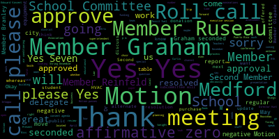
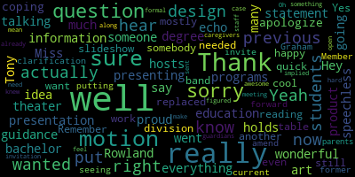

AI-generated transcript of 4.29.2024 Medford School Committee Regular Meeting
Back to all transcripts
[Lungo-Koehn]: The eighth regular meeting of the Medford School Committee will come to order April 29th, 2024. We have executive session at 5 p.m. and our regular meeting at 6 p.m. It will be here at Howard Alden Memorial Chambers, Medford City Hall, and via remote participation. Meeting can be viewed live. It's a TV?
[SPEAKER_04]: I hope it was the feedback from the door being open, okay.
[Lungo-Koehn]: Meeting can be viewed live on Medford Public Schools YouTube channel through Medford Community Media on your local cable channel, Comcast channel nine, eight or 22 and Verizon channel 43, 45 or 47. Participants can log or call in by using the following information. The Zoom link is on our city calendar and school calendar and the meeting ID is 926-0673-0127. Roll call, please. Member Rousseau.
[Ruseau]: Member Branley. Member Graham.
[Lungo-Koehn]: Here.
[Ruseau]: Member Intoppa. Present. Member Olapade. Present. Member Reinfeld.
[Lungo-Koehn]: Present.
[Ruseau]: Member Rousseau, present. Mayor Leclerc.
[Lungo-Koehn]: Present. Seven present, zero absent. I believe our student reps might be at our 6 p.m. meeting. Okay, great. And we could rise to salute the flag, please.
[SPEAKER_04]: I pledge allegiance to the flag of the United States of America liberty and justice for all.
[Lungo-Koehn]: We have executive session pursuant to General Laws 30A, Section A3. The Medford School Committee will convene an executive session to discuss strategy in preparation for negotiations with Medford Educational Secretaries, AFSCME, Council 93, Teamsters Local 25 Custodians, Medford Teachers Association for Kids Corner, Medford's Teachers Association for Paraprofessionals, Carpenters SEIU Local 888 because an open meeting will have a detrimental effect on the bargaining position of the committee, and the chair so declares. Is there a motion to go into executive session?
[Reinfeld]: Motion to go to executive session.
[Lungo-Koehn]: By Member Reinfeld, seconded by Member Graham. Please call the roll.
[Ruseau]: Member Branley. Yes. Member Graham.
[Lungo-Koehn]: Yes.
[Ruseau]: Member Ntapa. Yes. Member Olapade. Yes. Member Reinfeld.
[Lungo-Koehn]: Yes.
[Ruseau]: Member Rousseau. Yes.
[Lungo-Koehn]: Yes, seven in the affirmative, zero in the negative. We will convene as close to six as possible for regular meeting. Thank you.
[Cushing]: member in top are you able to join the breakout room. Good.
[Lungo-Koehn]: agenda bills and payrolls regular school committee meeting minutes from April 8th 2024 special meeting minutes April 24 2024 recommendation to approve a $1,000 donation to the string ensemble from the Schmidt family and a recommendation to approve travel to Puerto Rico February 2025 motion to sever the donation and the field trip oh she's severed by member Graham seconded by member Ruseau all those in favor I'm here. Oh, sorry. Gotta do the roll. All right. Sorry. Fine. Member Branley.
[Graham]: It means we're going to vote on those things separately.
[Lungo-Koehn]: Roll call, please.
[Ruseau]: Member Branley. Yes. Member Graham. Yes. Member Ntapa. Yes. Member Olapade. Yes. Member Rheinfeld. Yes. Member Rousseau. Yes.
[Lungo-Koehn]: Yes, motion to sever is approved. Now motion to approve. Motion to approve the consent agenda. Approve the consent agenda by member Graham, seconded by? Second. Member Olapade, roll call please.
[Ruseau]: Member Bramley?
[Lungo-Koehn]: Yes.
[Ruseau]: Member Graham? Yes. Member Intoppa? Yes. Member Olapade? Yes. Member Rheinfeld? Yes. Member Rousseau? Yes. I'm looking around like, come on, Mayor Lunker-Kern.
[Lungo-Koehn]: Yes. 70 affirmative, zero in the negative. Consent agenda is approved. Is there a motion to approve the acceptance of $1,000 donation to the String Ensemble? Motion to approve the $1,000 donation to the String Ensemble. By Member Graham, seconded by? Second. Member Rheinfeld, roll call, please.
[Ruseau]: Member Bramley? Member Graham?
[Lungo-Koehn]: Yes.
[Ruseau]: Member Ntapa? Yes. Member Olapade? Yes. Member Rheinfeld?
[Lungo-Koehn]: Yes.
[Ruseau]: Member Rossell? Yes. Mayor Longo?
[Lungo-Koehn]: Yes. Thank you for the donation. Motion to approve the field trip to Puerto Rico. By Member Graham, seconded by Member Branley. Roll call, please.
[Ruseau]: Member Branley. Member Graham. Yes. Member Ntapa. Yes. Member Lapate. Yes. Member Reinfeld. Yes. Member Rossell. Yes. Mayor Longo.
[Lungo-Koehn]: Yes. Seven in the affirmative, zero in the negative. Trip to Puerto Rico has been approved. Enjoy. We do not have any reports of subcommittees. five reports under our reports of superintendent. First up is Dr. Maurice Edward Vincent, our superintendent, with her updates and comments.
[Edouard-Vincent]: Good evening. I hope that everyone enjoyed their April vacation and that the recent warmer weather that we're experiencing is definitely welcome. Spring is here and it comes with all of the exciting activities we've missed over the winter. Walks and bike rides, spring sports like baseball and softball, tennis and crew, gardening and barbecues, and many other warm weather activities. I have some great news to share that over the April break, Medford High School Ethics Bowl team finished sixth in the nation in the National Ethics Bowl. We are very proud of our students and send our congratulations to them and their families. Congratulations on a job well done. We also want to thank the community, students, caregivers, all who participated in the citywide cleanup this past weekend. This annual event directly benefits and impacts our schools with many volunteers helping to clean up trash and beautify the spaces around our schools and playgrounds. Thank you so much for putting your time and effort into supporting our community. Although we are at the end of April, I do want to mark that it is the conclusion of Childhood Sexual Abuse Month. In 2021, the most recent year in which data is available, there were 83,644 cases of child abuse and neglect reported in Massachusetts. Adverse childhood experiences, including physical, sexual, and emotional abuse and neglect, household substance abuse, household mental illness, and domestic violence can have lasting negative effects on health, well-being, and opportunities in life. At the Medford Public Schools, we are committed to protecting all of the children under our care, Recently, over 500 Medford administrators and staff participated in training with mass kids at the start of our school year to identify signs of childhood sexual abuse. Through the professional development session, awareness raising and close collaboration with local law enforcement, social service providers and nonprofit organizations, we will work all the time to prevent child abuse in our community. I also was recently working on a ed talk with and I want to say a special thank you to Jetta Bernier and to former member McLaughlin and state rep gobbledy who participated in a conversation about childhood abuse last week. I have a few reminders. This Wednesday, May 1 is the statewide walk, bike, and roll to school day. This great occasion coordinated by the Massachusetts Safe Routes to School program is a perfect opportunity for students and families to travel to school as a pedestrian. As we all know, it's good for the environment and our individual health when we can take the chance to walk, bike, or roll to a frequent destination. Check in with your school principal to learn more about plans for Wednesday. Since our last meeting, we have conducted our middle school placement lottery. The results are available and posted on our website. Grade five students and their families are invited to attend an orientation program at their assigned middle school to tour the building, learn about programs and activities, meet their principal and assistant principal, teachers, and other staff. The McGlynn Middle School Orientation is scheduled for this Thursday, May 2nd at 6pm, and the Andrews Middle School Orientation is on Monday, May 6th at 6pm. Also, this coming Friday, May 3rd, it's School Lunch Hero Day, an opportunity to recognize our wonderful staff who work in our school lunch programs. So for tonight's meeting, we do have another busy agenda. We're particularly excited to hear about all the wonderful things that are happening and performing and fine arts, and we have Miss Haley relo and miss Suzanne fee, who will provide us with an update. and also recognize our wonderful students for the wonderful gold medal that they received earlier this spring by our high school orchestra. I also want to thank again the Schmidt family for their generous donation to support our string ensemble. We will also hear about the trip to Puerto Rico which was approved but we know next spring our students who have the opportunity to travel will definitely have a wonderful learning experience. Also, I want to thank the presentation that will be coming this evening about our HVAC system. I want to thank all of the engineers and environmental experts that are here and thank Alicia hunt and her team for supporting us this evening. We also will share with you a proposed rate card for the next school year. And I will present a report on the district's report on suspension and discipline data. Finally, we'd like to remind the community that our next school committee meeting is on Monday, May 6, which will also include our public hearing on the fiscal year 25 budget. This important occasion is the main opportunity for us to receive feedback on the proposed budget, that meeting will begin at 5pm in person here or at at City Hall, and also available on zoom.
[Lungo-Koehn]: Thank you, Dr. Edward Vincent. We have Arts Programs Update and Recognition of Orchestra Gold Medal, Ms. Suzanne Fee, Coordinator of Fine Arts, and Ms. Haley Rello, Coordinator of Performing Arts. Welcome.
[Fee]: Hello, everyone. Good evening. Nice to see you all. I'm going to share a presentation with you. in a moment, but this is just gonna be a fine arts update about the visual arts happenings that have taken place across the district so far this year, across all of our public schools. I'm gonna go over some highlights, talk about our exciting arts month that is happening, and fill you in about a summer workshop that we're excited to get started. At the high school level, we are working to increase our course offerings. And for next year on our schedule, we have design two, which will build upon what students have learned in design one. I've been teaching design one at the high school for two years now. So design two is just an extension of that. And it's gonna focus more specifically on different careers and career paths students may be able to take like fashion design, advertising design, interior design, and the like. The other course we're offering that I'm really excited about is a unified comprehensive art class, which is basically a comprehensive art class, but it's styled after the unified sports teams you might've heard about or unified PE where different students of different levels are gonna come together to work on equal terms through ongoing artistic, creative and community building activities. So we're really excited about getting that program working. Another exciting addition at the high school level is that I was able to, through the kindness and hard work of Molly Layden and Anthony Tortora, we were able to get some of the Tufts Macs into the design class for next year. If you could go to the next slide, Mr. Cushing. And so That's really gonna enhance our design classes, and we're gonna have the Adobe Suite installed by the fall. So we'll have Photoshop, Illustrator, and InDesign, and that's really gonna enhance our work and give some more real-world connections for those students in design class. The next thing I wanna talk about, and I'll go through quickly, the Fine Arts Department, the visual art teachers and I have applied and received over 10 different grants this year. And through these grants, our teachers were able to stick pure funding to support all our art shows that I'm gonna talk to you about our arts month coming up, but a lot of the grant money went to funding some supplemental activities and just enhancements at the shows, but that is not all we did with the grants. First off, you may know, we finished, we completed a grant that was a couple of years old, the Rainbow Mural Mosaic. That was sort of how we kicked off our school year in the Fine Arts Department, where we had our first outdoor art installation at Medford high and that was a community project students from every single school across the district contributed to that project so that was a really exciting way to start but looking forward to some of the grants that we were able to receive and implement this year. is we received a grant to do a kindness campaign across all of our public schools. So high school students designed a bunch of different posters and stickers promoting kindness. And I'm going to leave these here to be hung at City Hall, hopefully. But we're going to distribute them across every school and hopefully at the Medford Public Library and even some small businesses. So the students designed the posters and the stickers, and we're just going to share that message with the community. We also got a grant for an art supply lending library at the high school level where it's just a a dedicated space and supplies for students who want to continue their art exploration on their own. And it's really been nice to see kids who aren't in the arts programs have an opportunity to interact with the materials and even visit the classrooms to pick up the stuff. And it's also really been good in supporting students who have academic projects, but, you know, don't have their poster board or the markers or easy access to them so they can come and borrow them from the library. So, so far, It's been a great success. We're doing an interactive look and find board outside the EL testing office. It's another one of our grants. We noticed that outside the testing office, there's always, you know, small children waiting and we wanted to create like a welcoming experience for them all without any sort of language barrier. So it's just kind of going to be this large display board with different objects and then the little sheets to like look and find. So it's just a fun activity and a welcoming activity for those students. And we noticed a need for that. So that's another small grant we received. Beyond the grants we're doing a beautification project around Medford high school and it's been great so far students in Mr. Kane's class. have their artwork nicely framed. We had the frames donated and those are in B building and they look great. We've gotten awesome feedback on it and we are expanding that project. We're on the hunt for donated frames. I have reached out to the target community giving to try to get more frames. So we're extending that to other parts throughout the building. The next thing that I'm really excited about is our murals. if you want to bump up one. We've had a total of six murals created this year, along with a long waiting list of teachers who are looking for more. The mural supplies are funded by a Medford Arts Council grant from last year. And we're sharing those supplies with senior class students who are working on murals and other school groups. I really want to emphasize that the great thing about the murals projects and the National Art Honor Society is that it's been a wonderful way of connecting with students who are in the vocational programs who aren't able to take the art electives. It's, it's been a great bridge. And if these two murals were done in the CTE, one in the classroom and one in the bistro, and they were completed by vocational students. So that's really something we're excited about is involving students outside of the classes into some of the arts projects. And the next slide is just a fun picture of some of the works in progress. We're in crunch time here, especially my seniors trying to get them done by the end of the year, but it's been a lot of fun. We had three Scholastic Art Award winners this year, winning a total of five awards. This one is Lily Verhagen. She won a silver key for this, and she also won another honorable mention for a different piece that's not pictured here. The next one is Dakota Mahoney for her pencil illustration. She won an Honorable Mention. And lastly, our senior Stella Heinig won an Honorable Mention and a Gold Key for her ceramic work. We've brought the art into the after school program through the NHS, our members developed and lead an art activity on the February half day for all the students in the after school programs at the McGlynn Elementary School, the half day is kind of a long day for those kiddos. We were approached about doing something to kind of bring a little bit more fun to those longer days and it was a great success. They painted and illustrated bookmarks that we had like as a free giveaway in the Medford High School Library. So it was kind of fun. The older kids were enjoying the bookmarks made by younger students. We have a library exhibit right now happening at Medford Public Library. And I'm really forging a strong partnership with the Medford Public Library, so we now have a spot reserved every year for our students, and there's gonna be a display of 3D work next month in a different part of the library. We also had a children's art showcase at the River's Edge, and one of our students is a 10th grader who basically puts on this whole show. I sort of am her assistant, but she, collects the work and hangs the work and promotes the show. And we had elementary, middle school and high school artists participate in that as well. So that's everything we have done so far this year. But next month is really going to be an exciting month. And I'm not going to talk about it too much. I'll let Haley share a little bit as well, but we wanted to make a dedicated month to celebrate the arts and all the wonderful things that are happening. So arts month on the visual art end, you can expect to see an art show at every single school. And we have art tea Fridays, just as a fun way to promote the month where we're asking students and staff to show their appreciation for the arts by wearing their favorite band or musician or artist t-shirt. Our art shows at the elementary level all have supplementary activities as well. We're having a ceramics display at Medford Public Library, and we're gonna have merch on sale. And there's a lot of musical and drama events happening as well, but I'll let Ms. Rello tell you about those. We will also be at West Bedford Open Studios. This year we go every year and students have the opportunity to showcase and sell their work. So we'll be there this year. And then lastly, I just want to talk about a summer program that we are kicking off that's funded by the Cummings Foundation and the Medford Arts Council. And it's kind of a partnership with the CCSR. So we're gonna do a summer workshop for all grade levels, grades one to three, grades four to eight in a high school level. And it's going to be art instruction, but it's also going to focus on how art can be used as a tool for, as a force for good and to promote and share different topics and issues that are meaningful to you. And it's sort of just a way to teach kids about finding their voice through art. So at the elementary level, it's going to, I won't read the whole thing, but they'll hone their skills to discover the joy of using art for a force of good in the world. Grades four through eight, it's going to be split. So half of the class will be spent developing artistic skills through direct instruction. And then the second half will be spent as sort of like an open studio time in which students will create a piece that reflects an issue or a topic that's meaningful for them. And then at the high school level, it's going to be more of sort of like a studio or an artist in residence experience where they are going to be, these students will be our dedicated students. A lot of them I anticipate will be students who plan on pursuing art in college. And again, they will be working independently, but they're gonna create a piece of art that is inspired or comments on any social issue or topic that's meaningful for them. So we're really excited. We're going to be able to offer this for free. And we're in the process of finding our teachers who want to participate in this program with us. And lastly, I just wanna share, I'm so thrilled about everything that's been happening in our school. And from our webpage, when I was putting this all together, I noticed that in our description, it says that while recognizing the intrinsic value of the arts, students will also discover how the arts contribute to their communities and cultures around the world. And I really feel like when I reflect on all the work that's been done, that's the work that we are doing. I think the work we've done at the high school has really helped to build school spirit and connect the two different programs, which I know that's something that's been really important. So I feel like we're doing this work and it's working. And I'm just so thrilled to be able to share this with you all. That's all.
[Lungo-Koehn]: And I'm going to leave these with you. Thank you, Ms. Faye. Great, great presentation. If there's no questions, I'll invite Ms. Rell up.
[SPEAKER_00]: I don't know if that's true. Oh, sorry.
[Ruseau]: There we go.
[Rello]: Thank you. It's my theater projection. All right, so we're going to start with a jumpstart. Peter will pull it up for me. But All right, I'll talk about it. We started our really awesome amazing year with jumpstart music camp, when we worked with over 150 students for two weeks, providing them with band and orchestra instruction ensemble work and technique, which would help give them a jumpstart to their school year. We also compete in the Jumpstart Olympics, very important for brain breaks. And we had a very successful group that really rocked this year. Our end of camp showcase brought in our largest crowd yet, and also featured members of our high school string ensemble and the Medford Mustang Marching Band, which came to surprise our campers as guest performers. So there's some pictures from Jumpstart. Our next slide was the fall play. The Drama Club put on an amazing fall production this year, which was The Dining Room by A.R. Gurney. The entire play takes place in the same dining room across multiple generations. The students did a fantastic job with character development and comedic timing. And I will give them a little plug now that this weekend they are opening Mamma Mia, which they are currently at the high school right now perfecting. for their final dress. And it will be Thursday, Friday and Saturday at seven and Saturday at a matinee at two o'clock. So if you need tickets, just reach out to me. It's going to be a super fun time. Our next slide is a parade. So the Medford Mustang Marching Band proudly represented the city of Medford in the Woburn Halloween Parade and the North End Athletic Association's Christmas Parade this past year. The students really enjoyed bringing holiday spirit to the parade goers and finding some fellow Mustangs along the way. We have a lot of alumni that shouted out to us when they saw the truck and the band go by. They were very excited to tell us they were Medford alumni and they were so excited to see the Mustang. So that was really nice for the kids to see that, you know, once you're a Mustang, always a Mustang. So that was a lot of fun. Our next slide is districts. So we had four students that got accepted to the Northeast Districts this year. Jayden Veal and Samuel Keith from the high school got accepted to perform with the Northeast Senior District Orchestra. And Jayden Wu and Saffron Jacobs were invited to perform with the Northeast Junior Districts Orchestra. The Northeast District is very competitive, so these students have to practice really hard and study privately and work and through all their nerves for auditions and compete against all the other high schools in our area. So we were really proud of them that they, they excelled at it really well. Our next slide is from the MMA Music Educators Conference. Our Modern Music Ensemble, which is a class at the high school, got to perform this year. They were one of two Massachusetts high school ensembles that were asked to perform. They got to perform for music educators all around the state. The concert took place at the DCU Center in Worcester, and they were able to perform four songs of various genres. The Modern Music Ensemble is also performing this Wednesday at the band's spring concert, and they are performing on Saturday, May 25th. They're doing a brunch performance at the Byrne in Somerville from 12 to two, so. They get to play some different venues and what's better than a little bit of, you know, Mustang music and brunch. I think that sounds wonderful. Our next one's a lot of awards. We won a lot of awards this year, which is pretty awesome. So hang on. The marching band took home nine trophies this fall and won the New England Scholastic Band Association Championship finals with a platinum medal. This is the first time they've ever won finals. It's also the first time they ever received a platinum medal, which is a 95 or above. So we made Medford history. This past weekend at the Music in the Parks competition, they placed second in their division with an overall rating of excellent. The Medford High School Orchestra won a gold medal at MICA this year, again making Medford history the first time the high school has ever won a gold. And this past weekend at Music in the Parks, they placed first in their division with a superior rating and won best overall orchestra for the entire event, which is pretty amazing. The Medford Mustang Winter Guard won the New England Scholastic Band Association Championship Finals this year for the seventh year in a row. And they were, moved halfway through the season this year because they were beating their competition by too many points. So they moved them up to a higher division. And I think the kids are a little, um, upset at first, but they still ended up taking home the championship. They really rose the occasion and took on the extra work. So we're really proud of them. Um, the middle school string ensemble competed at Micah this year and took home a silver medal. Um, and they continue to dazzle audiences with their excellent talent, dedication, and hard work. If you've ever seen these students, they're always in the hallways practicing and working on sectionals. And for their age group, they work very, very hard and they're very dedicated. All right, arts month. So Ms. Fee already started talking about this. We are opening arts month on Wednesday with the band concert. Our grades four through 12 bands will be performing as well as our modern music ensemble and our color guard. And then the drama club production will be going up the second, third and fourth. At every arts or specialist night at the elementary level and middle school level, there will be both instrumental and art components. The modern music ensemble is performing at the burn on the 25th. The 15th is the string concert grades four through 12. And we are closing out the month with the Middle School Drama Club, which is putting on a production of Grease. So we have lots of theater, art, and music offerings. Um, some more updates from this year is we did add a new jazz, middle school jazz ensemble, Mr crescent team is Baptist started that they'll have their debut performance at the spring band concert on Wednesday. We're looking continuing our jazz program for the future. It's something we had in pre coven, but unfortunately it's one of those things that kind of lost along the way so we're hoping to kind of put it back in. We already have 75 students registered for this year's Jumpstart Music Camp, and we are pleased to be offering sessions in band, orchestra, and color guard. The Medford Band Parent Organization, which is a 513C that supports our band program, just received a grant from Tufts University that will help supply musical instruments to Jumpstart Music Camp for students that are on scholarship, and will also provide age-appropriate color guard equipment for our new color guard session, which we are excited to bring to Jumpstart this year. Students can sign up for a band session, a orchestra session, or a color guard session. And we're hoping if everything goes well this summer, we're hoping to eventually add a theater session in because we know we have a lot of theater goers and excitement for theater here in Medford. So this is the first year at the high school. We did bring our theater classes back in action. So we have lots of theater buzzing around the high school right now, and we're hoping to continue that growing. Any questions?
[Lungo-Koehn]: I know member Ntapa has a question.
[Rello]: Sure.
[Lungo-Koehn]: From Zoom.
[Intoppa]: Hey all, sorry. I had a question as well for the previous, well not a question, more of a statement for the previous presentation as well. Thank you both for presenting all this really wonderful information as someone who actually holds a bachelor's in art and design education with a design degree. as Miss Rowland knows, as I went through the many programs she hosts as well, proud product of, you know, the theater and everything. I'm going to be guidance over Tony's idea as well. But just wanted to really echo my, I can't say speechless because I'm talking too much right now, and also apologize I can't be there right now. I'm coping well with somebody here as well. Yeah, I just really want to reading through the slideshow was really happy and also really cool to hear that the band actually needed to be replaced and put in another division. And even then they still did really well. So thank you to both for all the work you do. And yeah, that's all I have. Thank you.
[Lungo-Koehn]: Thank you. Thank you, Member Ntapa. Awesome. Thank you very much for the presentation. You're welcome. And love the t-shirts. Yes, very much. T-shirts.
[Rello]: You can get them at all of our events.
[Lungo-Koehn]: All right. All right.
[Ruseau]: Mayor.
[Lungo-Koehn]: We're going to introduce the student reps and then I'm going to go to you.
[Ruseau]: I was going to make a motion to spend the rules and take item 2024 dash 24 out of order.
[Edouard-Vincent]: Good evening. I just wanted to make sure that I recognize our student reps who are here today. Darren wrong, thank you for being here in chambers, and know what you're asking who's online. Thank you to the both of you.
[Lungo-Koehn]: Yes, welcome and thanks for being here. Motion to suspend the rules by member so seconded by second member Graham. All those roll call please.
[Ruseau]: Remember Branley. Remember Graham.
[Lungo-Koehn]: Yes.
[Ruseau]: Remember and Papa. Member Olapade? Yes. Member Rheinfeld? Yes. Member Ruseau? Yes. Mayor Longo?
[Lungo-Koehn]: Yes. On the affirmative, zero on the negative. Motion is approved. Offered by Member Ruseau, Member Rheinfeld, and Member Olapade. Resolution on the end of fossil fuel building equipment purchases, whereas the buildings of the Medford Public Schools are exclusively the responsibility of the Medford School Committee pursuant to Mass General Law, Chapter 71, Section 68, whereas the Inflation Reduction Act and the bipartisan infrastructure law both provided significant opportunities for schools to end our dependence on fossil fuel infrastructure, whereas the climate crisis is an existential threat to the survival of our species and countless other species we share our planet with, whereas the climate crisis is primarily caused by human activity through the release of greenhouse gases, whereas today's leaders must take action now to ensure a sustainable future for generations to come. Now, therefore, be it resolved that the Medford School Committee One, bans the purchase of new or replacement fossil fuels powered equipment used to operate our school facilities, such as HVAC equipment and kitchen equipment, may authorize the purchase of banned equipment in emergency situations at a regular or special meeting of the committee, and must authorize equipment purchases covered by this resolution, regardless of the revenue source, such as municipal funding or grants from governmental or non-governmental organizations. I know we have our team, our city team, and they brought some guests with us to discuss the HVAC system. I think I was talking to Brenda this weekend about the process to fixing our HVAC at the two middle schools, somewhat related here. So I don't know if you want to hear from them or a member that has this resolution.
[Ruseau]: I'd like to speak on it.
[Lungo-Koehn]: Member Ruseau.
[Ruseau]: Thank you. The resolution does speak for itself pretty clearly, I think. And I think it's, you know, Medford has done things differently than lots of other communities. In fact, doing things that are, oh, that sun is right in my eyes. And done a lot of things that are frankly not even, that are explicitly laid out in the law, in mass general law, that should be done differently. And there's sort of a mountain of things in that category. The. Unlike Somerville, where they have transferred the buildings over to the city, in which case the school committee has no authority over school buildings, also doesn't have to pay for any utilities. And during COVID, the school committee could not open their buildings because they had no authority. The city had all authority. But in Medford and the vast majority of communities in Massachusetts, the school committee has explicit and total control over our buildings. I know that that is not then how Medford is operated, but we should be doing no capital improvements to our buildings, we should be doing no emergency repairs to our buildings, unless the school committee has authorized them. And so that's a part of the resolution that's not actually stated clearly. Well, I guess it is in the beginning. Um, and I just want to make it clear that this committee, um, the majority of the folks that ran for office, um, included in their platforms that we would stop, uh, using fossil fuels. And, um, I just, uh, that's what this resolution is about. And so, um, I'd make a motion to approve unless somebody else wants to talk on it.
[Lungo-Koehn]: Member Reinfeld, do you want to say anything?
[Reinfeld]: Yes, I just I just wanted to say that I would like to see the default to be to consider the non fossil fuel solutions for our building projects. which I think is a reverse of kind of historically what we as a society has done. I'm, and I think provision three here in particular is about bringing these decisions to the school committee so we can evaluate the language in terms of the climate goals that we have for the city the sustainability goals. And, and not just the financial goals looking being able to look comprehensively at upfront costs and then sustained maintenance costs, and I think that's really important that we're not just making the decisions based on what it costs right now to do this, but also to maintain these systems and make them sustainable for the future, because we know a lot of our buildings are about to experience some major stresses with age. And this right here right now is the time to be planning for that.
[Lungo-Koehn]: Director Hunt.
[Hunt]: Madam Mayor, I assume we call you that at these meetings. Sorry, I'm not usually at school committee. Alicia Hunt, I'm the director of planning, development and sustainability. I've been the city's, essentially, sustainability director since 2012, and I've done a lot of work in the schools, and I would like to respectfully request that you wait and see our presentation and hear the work that we've been doing and to understand some of the concerns that we have. As you all know, I am the champion of renewable energy in our buildings. I am the force behind why our police station is all electric, why our new library is all electric and designed to be net zero. And I think that the question about renovating buildings and upgrading heating systems is complicated, and we're prepared to share a bunch of that information with you this evening. So I was hoping that you would be hearing sort of what our findings are and our information before voting, deliberating on something like this, whether you were to then send it to committee or to vote after a presentation. I would respectfully request that you may want to see what we have first.
[Lungo-Koehn]: Is there a motion to table?
[Ruseau]: I certainly am very interested in this presentation. I read it, and I have a lot of questions. This resolution provides an out. There are going to be situations for which we must continue to use fossil fuels. For instance, I think sometimes when it comes to the backup options, having an electric primary system and a backup system that's fossil fuels right now might be the most appropriate thing. But when I hear that the city's hiring an OPM to do a project that the school committee has not even authorized, I can't help but feel like there's a big problem here. So I'm not interested. If at the end of that presentation, we need to have a meeting to discuss approving that project to use fossil fuels, that's fine. And that would become the new policy of the school committee. Putting it ahead of this, to me, feels a bit like we're gonna go ahead, hire an OPM and start doing some work. And then after the fact, the school committee said, you can't do that going forward. Well, that's not okay. I mean, the law is explicit that we have this authority and nobody should be touching our buildings without our approval. So I'm incredibly interested in this presentation and look forward to it and definitely want to know a whole heck of a lot more about the options and the site challenges I understand that we have with geothermal in that area. But if in 10 years, the federal government says, under no circumstance could public buildings use fossil fuels anymore, did we just blow however many millions of dollars and have to rip it all out? We don't know what the future holds, other than the fact that from the climate, we sort of have a pretty ugly picture. But we don't know what higher levels of government are going to do when they finally come to grips and finally start taking very strong action to stop the use of fossil fuels. And public buildings are usually the first thing they go for because that's the stuff they have control over. So I respect very much director Hunt and her work and especially the work around the library and the police station. I look forward to working with her and lots of other folks on the new high school. But I think we need to draw a line in the sand someday. And I don't know when anybody else would like to draw the line, but I feel like it should have been done 50 years ago. So maybe now's a good time to draw the line in the sand on this. Again, this resolution allows for us to decide, okay, we're gonna stick another fossil fuel thing in our buildings and just pretend that the climate is not completely falling apart. That's an option, but we need to make that vote when we make that decision. And today, we aren't even being asked about these things. Thank you.
[Lungo-Koehn]: If I may, just from the chair, and then I'm gonna acknowledge Director Hunt and her team have taken on quite a bit to help, plus Paul Riggi, who's our facilities and maintenance director over in the city side and through requests coming from me, which obviously are coming through the school committee, they've spent a lot of time working on the light posts on Freedom Way, keys, new cameras, and now HVAC, so I understand you want to move this forward tonight, but Director Hunt respectfully asked that we table this basically until they at least give their presentation and we can always go back to it. So I think out of respect for city staff working tirelessly for school needs because they want to help, I would ask that the committee respect that request. member Rousseau and then.
[Ruseau]: Everything you said except for one thing I agree with, you do not speak for the committee without us voting. And I really take offense to the idea that the chair who by definition the chair is the servant of the body is not the head of the body. That is the definition of a chair. And we did not ask you to do this. So I appreciate that as the mayor with the purse strings, that there's a lot you can do and there's a lot only you can do, but we didn't ask you to do this. And so you didn't, as the school come forward as a representative of the school committee to get this work done, you came forward as a chair, as the mayor, you don't have that authority. So, I mean, that's very upsetting to think that you can speak for us if we have not voted, because you cannot.
[Lungo-Koehn]: approved funding. I have not signed a contract. That's why they're presenting tonight on work that I asked them to do, but it was the committee that has discussed it over and over again. It's the teachers union who brought a grievance because our air conditioning doesn't work. And we said we were going to commit to fixing the air conditioning. So this is the base work and they're here before I've ever even signed a contract because obviously they're going to present to you first. So I don't know why fixing air conditioning is so upsetting. Miss Member Branley and then Miss Smith, sorry. Your mic's not on.
[Branley]: Oh, there we go. So I can understand everybody's point here. but I feel like if we're gonna draw the line, can we just wait for the presentation and then we can draw the line? I don't see why, I feel like it's a little disrespectful to the team. Yes, motion to table, please. I mean, yeah, can we just, can we table until they speak? Is that possible? Yes, so let's just table the vote until we can listen to them speak.
[Lungo-Koehn]: Sorry, I've had my member on top of work on the vote. It's motion to table is undebatable. So we'll just hold on for your name to be called.
[Intoppa]: Remember, we're mostly the table. I'm not sure what the motion is.
[Lungo-Koehn]: motion to table by member Branley seconded by member Graham.
[Intoppa]: Yes.
[Ruseau]: Remember all the potty? Yes. Member Reinfeld.
[Lungo-Koehn]: Yes.
[Ruseau]: Member Ruseau, yes. Mayor Longo, correct.
[Lungo-Koehn]: Yes. Seven in the affirmative, zero in the negative. Motion to table is approved. Is there a motion to revert back to regular order of business? You want to talk on the next paper? Smith, sorry.
[Ruseau]: Order of business?
[Lungo-Koehn]: By Member Ruseau, seconded by... Second. Second. Member Reinfeld, roll call, please.
[Ruseau]: Member Branley. Yes. Member Graham. Yes. Member Intoppa. Yes. member right bill. Yes. Remember all the body. Yes. Remember I'm filled. Yes. Member Rousseau yes Maryland.
[Lungo-Koehn]: Okay, yes 70 affirmative zero and the negative motion to revert has been approved we're going to go to number three HVAC update. Dr. Peter Cushing, assistant superintendent of schools, Miss Brenda Pike and director Alicia Hunt.
[Cushing]: Good evening Madam Mayor and members of the committee thank you very much really appreciate this opportunity to present today on this very important topic, just prior to getting started. Is we good? Just prior to getting started, I do wanna just piggyback on something the superintendent said earlier, school lunch hero day, the end of this week, if you can come out and support our lunch staff. Last year in April, we were averaging over 12,000 meals a week. Last week, we served over 16,000 meals. I just felt like that's really important for you to know as we move into this really important topic. So I will share my screen. And as you'll see, we have members of our OPM team and our engineers with us here as well, including Alicia Hunt and Brenda Pike, who we've been trying to work with on this. So let me just go through our agenda. First, team introductions. We'll do a look at the comprehensive assessment that has been done, some viable options that we have, some real world challenges that we have as well that kind of go to the previous conversation around full electrification and really our desire as well to do everything we can to make sure that we're combating the climate crisis, a proposed timeline and time for your questions as well. So, as we move through, I'll ask people to stand up and be recognized. So myself assistant superintendent. This is the operations, part of my title. Also Alicia hunt director of planning development and sustainability for the city of Medford. Brenda Pike, our Climate Planner for the city. John McLaughlin, Director of Buildings and Grounds, unfortunately cannot be here this evening. Paul Riggi, Director of Facilities for the city, who cannot be here this evening, but also with us tonight is Josh Doolittle from our Design Representative B2Q, who also conducted the comprehensive assessment of the Andrews Middle School a little bit over a year ago, that was in process and then completed. Gabby Cole, designer representative from B2Q. Joey Redmond, designer representative from B2Q. And then Tom Ellis, who is our OPM representative. And while not under contract yet, we have gone through comprehensive interviews that myself, Mr. McLaughlin, Alicia Hunt, members of the city's finance team, and Brenda sat in on to conduct a comprehensive review of those organizations who submitted applications for this and to really vet out the type of work that they've done in these areas and the type of work that they propose to do. So I'll now hand it over to Alicia and others.
[Hunt]: Good evening. So as I mentioned before, I have actually been, sorry, I have to get not too close. It's really echoey out here. Doing a lot of, Peter, can we actually have this here so it's easier to see? Thank you, because it's hard to see the same words up there. We can work it if you want us to. That works. Sorry, I'm actually used to doing my own presentations when I go to city council. So we did do a comprehensive assessment of The Andrews and McGlynn, the Andrew school so we basically we looked at we worked with National Grid to say what can we afford what could What would things cost? What would National Grid pay for? And so this was partially funded by National Grid and partially funded by the city to do a comprehensive assessment of the Andrews School as a role model. And I'm just gonna go, I'm gonna assume that people don't know so much about the buildings because I realized that also the general public watches these meetings as well. So please forgive me if you think that I'm telling you things you all know. But the schools, the five, what I always call the lower schools, not the high school, the other five, were in fact designed by the same designers and built by the same contractors and the same OPM over a series of a couple of years, opening in 2001 and 2003. They have generally the same kinds of equipment. They have the same models. They were installed the same way at the same time. So what we did was we said we were already doing a project at the Andrews looking at solar and battery and trying to make that work. And we already had work going on. And as that, we have been running a piece of software in the school for a couple of years that gives us like a constant commissioning of it, telling us what's working and not working. So B2Q is the team that's been working with me at the Andrews School for many years, already had a baseline, heavy, strong knowledge of the Andrews School. So we said, let's do this assessment. We understand what's going on. When people came to us and said, you know, the HVAC is not working, there are troubles with the heat, there are ventilation, like not ventilation, but you know, the systems aren't all working correctly. We said, look, we've already got a headstart at this building. Therefore, it would be most cost effective for us to do an assessment of this one building. And it would tell us a lot about all of our other buildings, because we understand that it's the same types of systems in the same way. So we contracted at the time with B2Q to do that. So I'm going to ask B2Q to actually speak to their comprehensive, the assessment they did of the Andrews and their recommendations. And then I also have information. We had an HVAC technician go into all of the schools and do some poking at them and understanding of what's going on. So I have a slide sort of addressing that. And then I'm going to come back and talk about sort of what some of the difficulties are with some of the things that we want we would love to be able to do in these buildings. So I'm gonna start by asking the B2Q staff to come up and talk to the assessment that they did in the Andrews School.
[SPEAKER_10]: Hi everyone, thanks for having us tonight. So as Alicia mentioned, we did the comprehensive study at the Andrews School. So this slide and the review I will go over will focus on the condition of the major HVAC equipment. There are air handling units on the roof that provide heating and cooling to mainly administrative spaces, the gymnasium and the cafeteria. And then each classroom also has what is called a unit ventilator to do the heating and cooling for those spaces. Of those units at the Andrews School at the time of our study last year in 2023, the cooling system for the gymnasium was not operational. All the compressors had failed and there was therefore no cooling in the gym. The cafeteria cooling unit had three out of four of the fans were not operational at the time of our study, meaning there was very little capacity to provide adequate cooling to the cafeteria. Additionally, the air cooled chiller, that is the machine that provides cooling to all the classrooms in the building, that was somewhat operational, but it required a facilities maintenance personnel to go up to the unit on the roof, climb a ladder every day and manually reset it. So each morning when it came on, it wasn't able to come on automatically and needed that manual intervention to operate. Lastly, during our study, one of the two boilers at the Andrews School had a glycol leak and was valve off and not operating. The one boiler was able to provide the heating to the school, but in the case of an additional failure, there was a lack of backup capacity. So that is the summary of the Andrews School. I've also can speak a little more generally to the McGlynn School based on some information that Mr. Cushing has provided us. My understanding of last year is that similar issues were experienced at the McGlynn and that cooling was not being provided due to equipment failures in at least I believe the gym, cafeteria and auditorium. Additionally, the chillers providing cooling to the classrooms were operating at about 50% capacity, so not able to provide full cooling on the hottest days of the year. Anything you'd like to add? All right, so I'd like to summarize the recommended option that we considered in detail during our comprehensive study at the Andrews School. The concept, I will start by talking about the solution for the classrooms. The concept is to replace the air cooled chiller on the roof with what's called an air to water heat pump. This heat pump would be able to provide chilled water cooling to the classrooms during the summer, doing the same function as the chiller. But the heat pump would also be able to provide hot water to the classrooms in the winter to do the heating. So one piece of equipment, a heat pump would provide heating and cooling to all the classrooms through an electrified method. This concept also proposed to replace the failing boilers with new updated condensing gas boilers, which are more efficient than the existing cast iron boilers in place. The purpose of these boilers would be to provide a few different things. A, it could provide backup heating to the classrooms on the coldest days of the year or supplemental heat if an air to water heat pump was unable to keep up with the demand. Second, there are still some devices in the school that without being upgraded would require a hot water temperature higher than what a heat pump, the heat pumping contemplate could produce. In that case, the boilers could still provide hot water to those devices. That includes like perimeter baseboard radiation that provides heat under windows and some of the supplementary heating in administrative areas like the principal's office, for an example. And last, these boilers would also provide the heating that would be needed if the building were to lose power and not have electricity. So in case of a power outage, there is a generator to provide some standby power to the building. The Andrews School is the city's emergency shelter. And these boilers could continue to provide hot water to continue to heat the school if there was an outage or an emergency situation. I'd like to just conclude by discussing the other systems in the building, those air handlers we mentioned. Right now, they get hot water from the boiler for heating, and then we have those cooling units up on the roof that I mentioned that do the cooling. So our study considered replacing those cooling units on the roof with heat pump units. So these would be variable refrigerant flow heat pumps that would be able to do heating in the winter and cooling in the summer with one heat pump device. We are also considering, with the air handler replacements, still maintaining a hot water coil for those backup purposes for the resiliency in case of the power outage. So heat could be provided to areas where people may assemble like the cafeteria in the gymnasium. So overall, this would result in about an over 50% savings in your current natural gas use, which is right now equivalent to approximately 39% of the greenhouse gas emissions, which would increase upwards towards 58% with full renewable electricity. And Alicia can speak to this, but solar power is being contemplated and planned for the Andrews School. So hopefully those greenhouse gas emissions would go up over time.
[Hunt]: Um. So what we didn't mention, and I omitted from putting on the slides, but I do just want to keep putting on the table, um, is that, um. We talked. I talked with members of the school committee, uh, pre covid. So I believe it was in 2019 about the roofs in the states of the roofs of the school. At that time, we authorized and, uh, I want to call it a repair, but it was a restoration of the roof at the Andrew school so that roof has a 20 year lifespan on it now and we I actually have in my email a con a proposed contract to put. solar on the roof of the Andrews School. It's actually looking like our best option, given the new federal direct pay incentives, is for us to actually purchase this solar, which could also result in us saving money. My goal is to actually move that project forward this summer, if at all possible. But frankly, I'd like to read the contract before I commit to something, but the pricing actually is excellent. I'm thrilled. I mentioned that because We need to start doing our roofs, we need to start replacing our roofs. The right thing to do is a full replacement that also includes new insulation, which would reduce the amount of energy we need for heating and cooling the schools, and could actually if we did it at the McGlynn school at the same time, could help us size down the size of the equipment we would need at the McGlynn School, at least, because of all the insulation it would add to it, would then also allow us to pursue, and I would pursue it sort of as the roof, I think it would make sense to fold into this project, pursuing solar on that. I would probably just do that as a separate piece to go out and procure solar for the roof of the McGlynn School. and see if we could get some excellent pricing on that as well. So I just wanna put that on the table that we're really looking at that. There's also always the option to buy renewable credits to offset electricity usage. So the city also had an opportunity and we employed an HVAC technician to review the equipment in all of the schools. He produced a nine page report that said that the reports for the Andrews and the McGlynn, he also agreed, were like, this is failed. This needs new equipment. This is not repairable. The other three schools all seemed to be that they needed some repairs, some serious maintenance, like a little more than heavy maintenance, some retro commissioning, but that they could be kept running for several years, which would give us a chance to do this project, see how the Andrews and McGlynn go, and then to start doing some capital planning to come back and do, because these systems won't last forever, but can we keep them another five years, possibly 10, yes. So, however, my recommendation is that we actually have the same OPM and design teams do these projects at the same time so that the things that do need to be changed are changed inconsistent with our values and goals around renewable energy, around lowering energy usage, and our similar equipment so that we can make it easier on our maintenance staff to maintain similar things. It is easier for them when things are on the same control system, same kinds of stuff. Oh, this is what works at the Brooks, it's the same stuff at the Roberts, and it's the same stuff at the McGlynn. It is in fact helpful for them. So that's my recommendation is to just rather than trying to have our facilities department or someone else managing what are kind of significant repairs and in some places replacement, we just roll it in and try and move that forward quickly. So then I just wanted to talk about the elephant in the room, which is geothermal, because we are all hearing about geothermal. I have been on the calls with our delegation. I have been looking at the various opportunities, there's a lot of federal money right now. If we do solar, we can get these federal, it's not rebates, sorry, I keep forgetting the exact word for it. Direct pay is what they're calling it, but different federal agencies are referring to the term differently, but direct pay. But what it is, is that as a homeowner, as somebody with a tax burden, if I was to do solar or one of these renewable projects, I would get a tax credit, like not reduce my income by that amount, but actually, oh, I owe 50,000 in taxes. You can take 30% of the cost of your project off the taxes you owe to the government. We as a nonprofit, as a non-tax bearing entity, we do not have the tax liability, this new system actually allows us to get a check back from the IRS for that money, which is brilliant. So for the solar, it would be for the solar, I do think and I'm pushing on this little bit if we did a roof and solar together that we could get, we may be able to get the money for the roof, the 30%, as well as the solar, but the rules for this program, while the law was passed about 18 months ago, the rules have just started coming out in January and February. And so then people have to sort of like understand what are these rules mean, and nobody's tested the rules because they literally just came out. So we are looking at that. But there's also a lot of money for geothermal and if your project involves geothermal, then you can start looking at these 30% tax incentives basically um so some of it is that there is a lot of piping in this in the classrooms and I would actually honestly need gabby and Josh to speak to specifically which piping what. would need to be at a different sizing to be able to handle the temperature of geothermal water that would include very disruptive work in our schools would take more than we could do in a summer. and would be disruptive in displacement of classes, perhaps the entire building in order to do that work. We don't have swing space like that. So that's one of my concerns, although actually the swing space would be your concern. My concern would be the work and the saying like the students couldn't, the work we're contemplating, we do believe we can do a large chunk of it over the summer. We'll get back to the schedule but a large chunk over the summer, and that we could do it without being disruptive to classes and that classes could continue, we could be there in the fall doing the work, and we would not have to displace any classes to do the work. Other things with geothermal, though, is that, and I have a map about, maybe I'll just flip the map up and then I'll come back to the words. So the activity use limitation means that there is known contamination under the ground and that it has been, we've had a licensed site professional, we've done studies, we have done testing, and then a limitation like this basically says here's what's underground, here's what you may or may not do on the property. So a lot of this, the areas in orange, you can dig down to six feet deep without having an issue. You can't dig deeper than that because of the contamination. And we're not concerned about in any way about students coming into contact with the clean dirt on top. But if you start digging wells, we would have to deal with that. And there are concerns about how that happens. And there are general knowledge that this entire area, different portions of it, have had dumping on them. And we know that the whole area used to be a salt marsh and that it was created as solid land by dumping materials from the construction of 93. So there's a lot of concern about what you are going to hit if you start digging in this area. And that is not, again, insurmountable, but when you dig a well and you have to get rid of the dirt, hundreds of feet of the dirt, and the dirt has contamination in it, that is an order of magnitude more expensive than getting rid of dirt that's clean. And in fact, hopefully you've all seen our beautiful labyrinth. It is wonderful. I love it. But it is a contamination cap because the land there was so expensive, we couldn't afford to clean up the land under that. And so we built this beautiful art piece that people love, but it's because the contamination in that corner of the property is actually that bad. So additionally, there's a conservation restriction on the entire property. This property was transferred to the city in 1999 from the state. and everything inside the red, the section nearest the river has a conservation restriction on it, or the whole area has conservation restriction, and the area closest to the river actually has a conservation easement, and I meant to refresh myself on the difference between the two. Suffice it to say, anything that we do in this area, we actually have to get permission from DCR. We had to go to DCR for the labyrinth, for the dog park, for the McGlynn playground work, for the wind turbine, but it's a conservation restriction. One of the things, and then actually that includes Hormel Stadium, fascinatingly. So one of the things that I've learned about geothermal is that it is extremely disruptive to the area. You have to dig up, you have drilling rigs that have to go down hundreds of feet and you have to do a lot of holes. Sorry, we did the math earlier and I have it on this screen, but we were talking about Approximately 200 wells to support the Andrews and the McGlynn schools. And we need the area of approximately two Hormel stadiums, sort of more than the football fields that would need to be dug up. And I understand that one rig can do about either one well or half a well a day. So we're talking about 200, days of rigs drilling. So maybe we can get two or three rigs, but still that's a huge amount of time. It would be dump trucks in and out of the area for months taking this dirt out. So that's some of our concerns about it, that it's not that you can't do it, but then also if we hit contamination above and beyond what we were expecting, it could slow the project and it could add costs that we were not even anticipating, even if we anticipate the expense of the contamination. We have not yet determined whether if you're using direct pay and you hit contamination, you can get the 30% tax credit on the 30% of the cost of disposing that soil, because you could if you were disposing the clean fill, definitely. But if it's dirty, we need to, I'm not sure if anybody's asked yet, frankly. So those are some of the things that have come up around geothermal. Now to be clear, I do think we should be seriously considering geothermal for Medford High School. And I think about where are we looking at? What is the location? Is this possible? But when you're doing a massive building construction, a new construction, you're already displacing students, you're putting in new HVAC equipment, you're putting in all new stuff, I definitely think it needs to be on the table for that project. I have significant concerns here, though. And then the other thing we so we talked about, could we do it like Cornell Stadium needs actually new turf in the next few years? Could you dig it all up and put boring holes under the turf? Turns out, yes, we're told that you can put boring holes and put the turf on top of it. So that is, in fact, not out of the question. We do have another giant turf in Medford that that is perhaps this could be on the table for. So we're looking at these things. But again, if you did it, you can do it under a parking lots, you can put it under parking lots and put your pavement right over it and that's fine as well. But again, that's a lot of time for your parking lots to be disturbed. So I feel like we I really wanted to go into that because I think a lot of people are saying, why not geothermal. We would still also need to use a lot of electricity with geothermal geothermal does not negate the need for using electricity and your electricity use goes up because of all the pumps that are involved with it as well. I will then just sort of, because we didn't examine geothermal for the police station and the library and the cost benefit for the energy savings, like the greenhouse gas reductions from an all electric building or an all electric with geothermal was not significant because of the amount of electricity we still needed in the building for the geothermal. Like it was a real number, but it wasn't like, oh, we'll cut it by 50%. It was like another five or 10%, if I remember correctly. So then there are other issues with the full electrification, because in addition to geothermal, you could use electric resistive boilers. And I'm just saying that those use a lot of electricity, like a lot of electricity. And that is, would be in my opinion, very wasteful. But regardless, if you did a lot of, if you did electrification, all electrification, even with geothermal, we would need upgrades to the National Grid infrastructure in the area. That was actually something that we've been butting up against for the solar battery project that we were working on, that the cost of the electrical upgrades were gonna be, at that time I was quoted around $350,000 and National Grid was putting it on us. And I was looking at a million dollar project. I was like, this is insane. So that is something that is a serious, a significant concern. We would also if we went all electric, we would need a significantly larger generator than we currently have at each of the buildings. Now if we did that a larger building a generator would not physically fit into each of those buildings, so we actually talked about could we put a. an external generator between the two buildings in like a separate outbuilding that would serve both buildings. Yes, it would be possible. It might not actually be a bad idea if we needed a larger generator. We would also need the special permits from DCR because of that. So that's something to sort of like, so there were some, some of these were the concerns. And then we were also looking at the kitchen hoods, which would need a heat recovery ventilator because the, outdoor air hitting the coil could damage the heat pump. Okay, I'm sorry. Somebody, one of the other experts would have to explain that at this point, because I am aware, and I believe Rhetta may be here to speak to this, that we are already upgrading a lot of our kitchen equipment to all electric. And we are in fact running into electrical problems, as I understand it, because of that, but we are trying to move forward with electric ones. So very briefly, I'll just touch on This is the, our team, our current team has. the most knowledge about the Andrew School. We believe that the McGlynn School schedule would be very similar, but we have to reserve sort of this caveat of we've done extensive reviews of all of the equipment in the Andrew School, and we have a lot of knowledge and a lot of confidence in this schedule. The McGlynn School would probably move on the same timeline, but once they get in there digging into the details of the building, it's possible that there'll be some unexpected conditions that could delay our off derail us a little there's actually a bunch of pre work that is needed, this is a major project looking at. Some potentially sub metering understanding exactly the loads that are needed in this building what what do we need to put in here some conceptual design. There's a phase where you work with the owners of the building to determine the owner's project requirements. So this committee would be involved in determining the owner's project requirements of the project, and then the design of the project, construction documents. We're exploring the best way to move this forward. Some of this equipment has extremely long lead times. Gabby's actually been making some phone calls. there's one piece of equipment that right now has a 32 week lead time. And one of the key, I wrote it down, which one. So there's a recommendation around what procurement process we should use and whether we should actually consider a construction manager at risk process, because that would allow us to pre-purchase a bunch of the equipment to do the design and purchase the equipment before the rest of it. in order to hit these lead times. And then what we're looking at here is to start the work. We would be ready to start the work with all the procurement actually next summer. So we'd be looking maybe at a May start, but maybe you don't want to start it during finals. We'd have to be able to understand what exactly we're talking about. Would there be disruption? If there's no air conditioning, we might as well be using the space anyhow and working on the equipment. through the summer and then into the fall with it being ready for the heating season to be up and running. I originally had hoped that we could do it this summer, but that is not possible with a project of this scale and not with the equipment lead times that we're seeing right now. So that is a lot, but I also have, Gabby and Josh have also their electrical lead here as well. And we've also brought, Tom is the representative from the OPM that we are recommending that we work with, who has experience with these kinds of projects. So once we start to get into the details, frankly, I'm good at the high level, and we hit a point where I have to turn to them for the details.
[Lungo-Koehn]: Thank you. Ms. Smith, do you wanna come up and speak on this? Sorry, we tabled it, so.
[Smith]: That's all right, thanks. I just wanted to say with respect to the kitchens, we have a lot of equipment that needs to be replaced. We've been working on borrowed time this year, I had planned and had hoped to replace all of the gas equipment with electric. So I started working on it. In the beginning of October, getting electricians in saying okay can we do this what equipment what I need to purchase. getting it ordered installed so now we're almost may I have three beautiful shiny new pieces of equipment in the Andrews and we cannot use them because we're still not. we're not connected yet. So there are some real challenges in making this happen. I've also had electricians look at the McGlynn, because I have already purchased one piece of equipment that's there also. And they've told me that the board, it was a mess from day one, like wrong sized wires, things are mislabeled. So it's a bigger task than just purchasing the equipment and getting the connections. And I'm hesitant to try to continue working towards electrical until I can really use the Andrews as a guinea pig and figuring out once we start using it, can the building actually handle the load because it draws a lot of power. So that's just a lot of concerns. And in the meantime, I still have all of these other schools with equipment that needs to be replaced and the clock is ticking. So that's just what I wanted to share is my experience with trying to make this happen. not being as easy as it seems.
[Lungo-Koehn]: And that's, thank you, Ms. Smith, that's relevant too. If you had to come before us each time, you maybe couldn't do electric because of our panels or the work needs to be done on that aspect. Member Rousseau?
[Ruseau]: Thank you. I like the presentation I especially like the additions to it that were spoken because there was things sort of missing I thought from the presentation that you answered about the backup gas boiler backup is probably the wrong word since it will actually need to be in use anyways. This is my seventh year in school committee so I'm just going to be blunt. If a future superintendent doesn't like the electric bill. Can they turn off that system and just go to the gas system to save some money, because that's, that's an, that's a Medford mo. we're gonna cut this budget this year. And if we stop using electric at the Andrews and just use the gas backup system and it costs way less money, that is a decision that won't come to the school committee. It'll just be somebody in facilities or in the superintendent's office, no offense to the superintendent, but when the pandemic began, or maybe it was just before the pandemic, Director Hunt evaluated the high school about what it would be, how we could save money by installing more efficient equipment to heat or cool the place. It turns out there's no such thing as more efficient because all of the equipment was turned off or dead. So you can't do better than zero. And so I'm just deeply concerned as this is a system that could support just in perpetuity if somebody decided the electric bill was too high.
[SPEAKER_17]: Yes, that is a possibility. Thank you.
[Ruseau]: I assumed I just, you know, just thinking about like how we're going to figure out how to make sure that that does not happen. It's not for you all. I'm super excited by the solar on the Andrew stuff. That's very exciting. I had a question about what is construction manager at risk process.
[Ellis]: Hello, I'm Tom Ellis with Jones Lang LaSalle. The construction management at risk construction delivery was part of the construction reform law of 2004, which allowed for alternative construction delivery over Chapter 149, which is a traditional design, bid, build process sequentially. construction management risk allows qualification based selection of firms that are builders but then can get them involved earlier in the design process so that things like early procurement of long need items can be secured. Many of the Projects in the Commonwealth are now going at construction management risk. I actually participated in a session on Monday where Deputy Director Jay Mitchell was really advocating for it and telling the process. Actually, I can provide a link, which is really a good 30-minute presentation by him on the benefits of construction management risk. But it really becomes a forming a partnership with a builder, instead of having an adversarial condition where a chapter 149 kind of creates that low bid process and then, and then it also allows the, the builder to participate in the budgeting cost estimating scheduling. So it's a, you agree upon a fee early on it's a competitive process, and the legislation requires certain attributes to happen on the selection process, so it's very clear and open about how it's done, but it's a more of a qualifications based process. But it has proven itself over, let's say, almost 20 years now of being in place that it's really beneficial. The quality of the construction goes up substantially. So there's a lot of discussion, but I'll provide that link, and it's a really good presentation if you're interested.
[Ruseau]: Great, thank you. That's nice to hear that it's not the waterfall approach or whatever it was called where you have to just wait and wait and then you get the low bid and it's the lowest bid by a long shot and everybody's like uh-oh like what did we get a bid for? I'm not sure my colleagues will have other questions but I'll come back to my question because I gotta find it.
[Lungo-Koehn]: Member Graham.
[Graham]: Thank you. A couple of questions. On one of the slides, it says partial decarbonization is the practical solution for the moment, but full decarbonization could be done in the future with more time and money. And it looks like the timeline for the Andrews is really through the summer of 2025. So what does that mean for the McGlynn? what would it mean if we were to pursue full decarbonization? Like what is the timing differential between what you're proposing and what full decarbonization would look like?
[SPEAKER_17]: Yeah, so as it relates to the McGlynn School first, I'll do that one with the partial and then moving to the full. So, you know, The McGlynn School and the Andrews School, like Alicia mentioned, are very similar. And so we hope that they would follow a similar timeline with this concept that is being currently contemplated. And not to get too technical, but in the future, additional equipment could be added to this system, which would enable it to be more electrified, more 100% electric. However, there are certain caveats associated with that, most notably that the electric service to the school would likely need to be upgraded in order to support more electric resistive loads and other heat pumps. So the timetable for that is really a similar project to this in terms of, you know, one to two years from conception to implementation, possibly sooner depending on the scope that's contemplated as it relates to 100% electrification through geothermal is a longer process. It is a process that should be looked at as taking up to three years in a facility of this size, possibly longer. I say three years, not including any potential unforeseen issues related to contamination. So it is certainly a longer timeline. While certain activities during design and construction could be compressed or performed in parallel, it is still going to be a notably longer timeline to implement.
[Graham]: So I just want to make sure I'm understanding. So it's about two years per school. And if we were pursuing geotherm, like full electrification, it would be three minimum per school, maybe more, and obviously cost being the big variable there because of the potential contamination, which I think we all are worried about. Dogs digging there, and my dog digging there, and my kids going to school there, none of that makes me feel super warm and fuzzy. So I absolutely understand the contamination concerns on the property. So I'm just trying to understand scope wise, what would it what would it look like? And, you know, frankly, do we have could can could we wait six years really for one of those schools to be done? Or are you proposing that these two would be done sort of in parallel?
[Hunt]: I realized that that was perhaps one of the confusions we are absolutely proposing that these two schools be done in parallel that we're doing these at the same time that we would start the Anderson the McGlynn right now, both of them and our goal is that both of them go to construction this time next year. But we have confidence in where the Andrews is that we can move it at that timeline. And we believe that we can make the McGlynn have that also going to construction around this time next, like, you know, May, June of next year. But we have to just have that reservation of we really have to get in and look at all the details. And there's some pieces that we can, things that can be doing in advance, some that can't. If you've ever been in actually the, Those are the boiler rooms right the central the interior rooms, their interior to the school, and on the Andrews I know that there's these big vents that we're going to have to remove and try and get equipment in and out through these vents. And we still haven't quite figured out how that's going to happen at the McGlynn. And one of the reasons actually to do the CM at risk program is that they would be part of the design team. So as rather than us saying, oh, we are engineers and we have figured out how you're going to get this equipment in and out. We work with the people who will actually be responsible for getting the equipment in and out to make that decision about how it's going to work. And that is actually one of the big reasons I'm very interested in. We've never done CM at risk in Medford, but it seems to me that for something like this, where it's not just, well, here's a flat piece of land, build a building, this is an existing building that'll be occupied, that we need the person doing the work to be our partner in figuring out how exactly this is gonna happen. There's some interesting spaces in there.
[Graham]: Yeah, so just one more question. If I am understanding correctly what your proposal is, that the chiller would be replaced with an air to water electric heat pump, and the air handling units would be replaced with heat pumps, which are also electric. So the remaining gas component would be the condensing boilers. Is that accurate?
[SPEAKER_17]: And domestic hot water, yeah. So the central equipment, which would be remaining gas, would be the condensing boilers. And what they would serve would be reheat coils, which are hot water coils in the ductwork downstream of the air handlers, as well as perimeter hot water radiation, which basically heats the exterior of the building surface so that occupants do not feel cold.
[Graham]: Got it. And so are we saying that the scope of what you're proposing does include the insulation and the roof replacement? Just trying to understand where those are at.
[Cushing]: The scope at present does not at the Andrews. But hopefully, the scope at the McGlynn would. Because the Andrews had a restoration film. Anyone is glad to join us on the roof of the Andrews? see this white, it's a it's a white roof film that was put in in Google View might have it by now right. And then we also have the McGlynn roof which is significantly larger, that with a solar and with a project, there would probably be the best decision to redo that roof, and to see what costs we could recoup through those, for lack of a better word direct pay tax credits. I do also just want to say, though, that when you mentioned scope, the scope of this project does not include the piping that runs through the building, and it does not include the unit ventilators in the classrooms, all right? That is not contemplated in this. I just want to be clear about that.
[Graham]: And why are you being clear about that?
[Cushing]: Well, it's why do I need to know that it's because if something if we come back in five years or so on and we say we now need to replace the unit ventilators. All right, I don't want you to, I don't want people to think that this is a soup to nuts replacement of systems. And the other problem with waiting, waiting years is, in particular with these two schools, we need to act.
[Hunt]: And so when we talk about scope so we have a pretty solid cost of what we think the Andrews project would cost that we've been basing this on. We know that the McGlynn is about 60% bigger. We know we have an inventory of the equipment that's in there. So we have a general cost of what this would cost. So we've been banding some numbers about, but until they actually do design work, it would be September or October when we'll get estimates that are, this is how much we should, we actually need to pay for the whole project. We don't have that number yet. We also have not gone out and gotten what is that number for the roof? You can't actually have a solid construction but by the time we get that number in September, especially if we do see them at risk, it'll be a solid number, they'll be like yes this is how much we need like okay we're going to I am not your expert on how do we pay for things, but so if I were to say, okay, it's time to go get a bond, assuming that's what we did, then we would have, we would know how big that bond should be at that window. Right now, we're talking in big round numbers, numbers that are big enough that legally require we must have an OPM to do the project, right? So that's where we kind of are in budgeting.
[Graham]: So can you give us an idea of that estimate? Like what is that round number?
[Hunt]: We, we've been looking at a number between 15 and $20 million to do both these projects at both schools. if we have not really costed roofs. When I did that back in 2019, we were looking at one to two million to do a full roof replacement. I haven't asked for pricing since then, but that was frankly, I was looking at orders of magnitude because in my work, we go get a grant to pay for things. We need to know, is that grant big enough or that grant big enough? So those are sort of the round numbers.
[SPEAKER_00]: Yep.
[Hunt]: why we actually need to hire the consultants to do the design, to do the engineering, to figure out solid numbers. But these are big numbers. These are not small. I realized that. I was on our building projects.
[Graham]: So I think my other question is, when we talk about how would we pay for this, I think that's the school budget has like nothing in it for maintenance. We've started having that discussion. We could talk about why that is all day, but the bottom line is there's like a fraction of what is even needed to maintain the buildings in there today. So where does $20 million come from in terms of like what procedurally has to happen and how can we support this process? Because those two buildings need this work urgently and probably long ago. So I, you know, concern that we have taken so long to like get to the point of action, which is something that I think we have to just continue to work on. But meanwhile, like we have a project in front of us and we're going to have to figure out how to pay for it. So where does that where does that come from in terms of like the broader picture of the city?
[Lungo-Koehn]: Yep, no, I think that what you could do for the project is support this plan and let our teams move forward and get it done. OPM is going to be a whole cost in itself. So that will come out of ARPA funding, and then we will move forward with most likely a bond. Okay. That's helpful, thank you. But we can discuss it more in our financial task force meetings as we map out all the needs of the city and schools.
[Reinfeld]: So I had two questions. So to confirm, we're looking at this coming out of the city budget rather than the school's budget?
[Lungo-Koehn]: This will not come out of the school budget.
[Reinfeld]: Just wanted to say it. Then my question, Dr. Cushing, you alluded to this, what does compatibility look like for future projects in terms of what equipment we're going to need and being able to make the connection move transition into the next stage of renovating this what is more, and I guess maybe I'm asking what is Moore's law for HVAC equipment.
[Cushing]: So, so this, these are the moments where I have to admit what I do and don't know and that's why I have a team of engineers here.
[Reinfeld]: Because, in all honesty, provided the transition I was expecting them. Yeah.
[Cushing]: And I will say this, like, Earlier this year, I presented on these systems, and I think I said, like, I dove off the deep end. And again, recently, I'm amazed that, you know, just the size of the pipes in the building feed in classrooms. would need to be different for various temperature changes that geothermal, whatever, like the minutiae of details that need to be paid attention to in these projects is why it's great to have engineers now answer that question for me.
[Reinfeld]: I would love that, sir.
[SPEAKER_17]: Yes. So as it relates to kind of equipment being kind of obsolete over time and becoming obsolete over time. So what we are contemplating replacing is our 22, refrigerant 22 based equipment. So it's been installed since original construction in approximately 2001 to 2003. It has worked for 15 to 20 years, depending on the piece of equipment you're looking at. Parts are, you know, for the most part still commercially available refrigerant has been phased out. So refrigerant is not really available or available in small quantities and so that kind of refrigerant phase out will continue as there are plans to continue, you know, lower, lowering the global warming potential of different refrigerants, and, you know, in. incorporating legislation that requires lower GWP refrigerants to be used. So in that case, proceeding today, there will be a certain refrigerant base of equipment that is available. And over time, the refrigerants may change, the requirements for refrigerants may change. So as it relates to other components of the system, there are compressors, which the technology has improved and evolved, but compressors, which were made 20 years ago are still replaceable today. There are control boards and other kind of micro electronics, which are integral parts of these machines. And these are probably the, most, I guess susceptible to Moore's law in the fact that technology advances related to control boards and PCBs and other types of microelectronics go much faster, other than, you know, compared to mechanical systems like compressor. equipment, which is reaching the near near the end of its life, which is widely considered to be 2015 to 20 years, depending on the piece of equipment. You know, will over its life necessitate various maintenance procedures, which would include upgrading or replacing control boards as they fail. So for the most part, control boards and other small components of these devices have been widely available for different pieces of mechanical machinery and HVAC equipment for a long time. And so, in other words, you can typically go out or one could typically go out and use a vendor to procure and install a replacement part through the life of the equipment, so for 15, 20 years. And at that point, somewhere along the way, they will, and they being the manufacturers, will start to move on to newer generations of equipment and which they will stop making those parts and they would then be susceptible to Moore's Law. So somewhere in the 15 to 20 years is what I would expect.
[Reinfeld]: Okay, and then will the, do you anticipate, I know nobody can see the future exactly, but do you anticipate there will be more climate friendly, more low carbon options.
[SPEAKER_00]: Yes.
[Reinfeld]: And that's kind of what I want to anticipate. I don't want to be in a cycle of replacing things with what we have, just because it's the only thing available.
[SPEAKER_17]: And the manufacturers are certainly thinking about that too, because as they are kind of working towards lower GWP refrigerants and kind of continuing to manufacture their current market base or current offerings while looking at R&D and developing new offerings, they are saying, well, what happens when I have a refrigerant leak or one of my customers has a refrigerant leak on an old system or needs to repair? For example, R22 is not, for a number of reasons, is not desirable. So what would you do? Presently, there are options to drop in newer refrigerants into systems and they're being made in such a way that future refrigerants should be compatible.
[Ruseau]: Thank you. So I think you're answering my question about R22, which was that when we're done with this, there will be no more R22 in use at these two buildings. That's correct. Wonderful. Best thing I've heard all night. That's not true. Our stuff was good, but there's also more great stuff. And I'm going to scroll up here. So I just renovated my kitchen, and I had to spend a fortune on power upgrade. which on scale probably is less than the $350,000 that we were talking about for a whole school. This is obviously a problem in probably every municipal building and school building in the country. Is there anything going on of interest around how this is funded? Because to think that every school building in the country will be able to pop a $350,000, right, a $350,000 check for electrical upgrades, that just doesn't seem like a scalable or, you know, we have Prop 2.5 in this state. I mean, there's no way every school building is ever going to be electric if everyone has to upgrade their, the do national grids bidding. I mean, we all look at our bills and It's like we pay this much for electricity and this much for the delivery. I don't know what's included in delivery if it doesn't include actually the infrastructure. So is this just the way it is right now? Is there anybody looking at how to change that? Is this sort of like when I upgraded my panel at home, like 8,500 bucks just to install my new kitchen stove? Is that what we're talking about?
[SPEAKER_17]: So there aren't. grant programs that I'm aware of right now, which are funding specifically service upgrades, unless it's rolled into a project. So if it's necessary for a project, presumably it could be contemplated subject to reviewing the rules. But for example, if a service upgrade was necessary to support a full electrification project that also qualified for the 30% direct pay payment, that it would need to be evaluated whether or not that cost could be covered by that incentive.
[Ruseau]: When I did this upgrade at home, which nobody cares about my home projects, but one of the things I'm worried about is, in 20 years, is this going to be enough power in 20 years? And so when we talk about these buildings and we spend $350,000 to upgrade the power, is that really enough power no matter what happens? Or are we going to potentially have to do this yet again? Because I'm sure that the power that's there now was big and powerful and a lot when the building was built, and far more than a building 50 years older. So is this just like we're on a treadmill of dumping tons of money to have more power come to buildings? Or does this feel like this would be an amount of power that nobody can imagine using at all kind of thing?
[SPEAKER_17]: It's, I think there are two elements to your question, which need to be considered. It's what's happening. If you look at it from what crosses the curb perspective, what's happening on Medford side of the curb and what's happening on the national grid or the utility side of the curb. And so there are costs associated with making the building capable of, I guess, accepting that level of demand or having that level of electric demand. So the 350,000 is for our side. I'm not sure exactly where that number come came from, it might have actually been related to some grid upgrades to support the project. Oh, the interconnection costs, yeah, yep. So related to the battery solar project, correct, yeah. So that's not even really the full service upgrade necessary to the building, switch gears and other electrical infrastructure in order to support a full electric. Okay, so that's not a big number.
[Ruseau]: All right, thank you.
[Cushing]: I don't need a lesson in electricity, because frankly, that's... And I don't have the numbers right in front of me, and Rhetta would know them right off the top of her head, because she's been The costs just on electrical upgrades to move for those three pieces of kitchen equipment have been extremely high. Right. And, you know, but it's, it's the price we have to pay to move to a decarbonization, because we're moving to 480 volts. which then if that breaker trips requires a service call, because you're not supposed to just hit that because of the lethal amount of electricity moving through that breaker.
[Ruseau]: A little flip in your kitchen. All right, thank you. Thank you.
[Hunt]: I think I think I might actually just add that there we have been trying to poke at our I've been for a while we actually the mayor and I met with the Greater Boston Labor Council last summer. and the MAPC to start looking at grant opportunities. Are there opportunities for us to pull in federal money to help pay for some of these things? And what we've been trying to untangle is that the timelines for federal grants don't work for the work that we need to do in these schools right now. But we're continuing to try to see if we could set up some pockets of money that could really help with other projects, other big school projects. The difficulty is when you apply for a federal grant and a big grant, it usually opens for a window of time that's usually six weeks to 12 weeks, right? And then you have to get your application in, and then you often don't know that you've gotten the grant for six to eight to nine months, and then it takes four or five more months to actually access the money. Right now, I am working through a Department of Energy grant. Actually, Amanda Centrella in my office is. We received an earmark a year ago. We were told like a year ago in March that we were getting an earmark for Carr Park from the Department of Energy. We were offered the paperwork for it. So that we didn't even apply for that grant, right? We just asked and, you know, Representative Clark was got us the money. So we skipped the whole grant application portion. And this summer, we started working through the paperwork with them. And we are still working through the paperwork for the federal government to get approval to spend that. We are going to spend a full calendar year working through the paperwork to get the DOE money released so we can spend it. And actually there was some complications with it. And as a result, we're gonna flip around some of that DOE money will actually help pay for the solar array at the Andrews School and the ARPA money. I thought we were gonna, I was gonna ask for that. We'll put into the car park project because they can't pay for skate ramps. with DOE money, but they said, oh, you have another solar array in the city somewhere. Oh, yes, that's part of the same project, because we don't want you to lose your federal earmark money. So I just want you to understand, this is part of it, is the cumbersome and the long timelines. We need this project done now, and we can't wait for a federal grant to come in. That doesn't mean I'm not chasing them. It just means I don't think we're going to get them for this project because of the way these timelines work. So I just wanted you to know that we're not not looking at them.
[Graham]: Thank you. Member Graham. I just wanted to make a motion to approve the scope of work provided to us in this presentation and thank the team for being here. I know we had a lot of really long, painful questions. Thank you all for doing that, but I just wanted to formally approve from our perspective this project and ask that we get regular updates from the group as the process moves forward.
[Lungo-Koehn]: Great, thank you. Motion by Member Graham to approve the scope of this work, seconded by... He said it first. Second. Member Ruseau. Roll call, please.
[Ruseau]: Sorry. Member Branley.
[Lungo-Koehn]: Yes.
[Ruseau]: Member Graham.
[Lungo-Koehn]: Yes.
[Ruseau]: Member Ntapa.
[Reinfeld]: Yes.
[Ruseau]: Member Olapade. Yes. Member Rheinfeld.
[Reinfeld]: Yes.
[Ruseau]: Member Soyes. Mayor Landau-Kirk.
[Lungo-Koehn]: Yes. Seven in the affirmative, zero in the negative. We approve the project. And again, thank you for all your hard work. We appreciate it.
[Cushing]: Thank you. The other last thing I'll just say as we move away from this is that we've been working to change out the lights to full LED throughout our buildings. We've even done some of that work, significant amount at Medford High School, because we're still running T12s there. And so even though that building will hopefully sunset in the future, the runway is long enough that it will pay off. We're using on-bill repayment. Uh, the mistletoe in the Brooks of the last two schools that will get this treatment, and that will happen this summer. Just so that you're aware.
[Lungo-Koehn]: Thank you, Dr Cushing. We have number four suspension and discipline report. Um, Dr Edward Vincent, Superintendent.
[Edouard-Vincent]: Good evening, the report that I'm going to present right now is suspension data and discipline report, covering the dates of August 28 2023 through March 1 2024. In working on this project, this report, I had the opportunity to work with several district leaders, including school building leaders and staff when developing this report to have the context for its data. In particular, we strove to ensure that the report doesn't convey identifying details about individual students. The disciplinary events which have been captured in this report cover a variety of incident types, student grade levels, and other relevant factors. For example, some of the suspensions are the result of pending felony charges. There are five official categories that the Medford Public Schools uses when addressing discipline. The first one is behaviors that are violent, which could be exhibited through words or the possession of weaponry. The second category is behaviors or language or actions that are hostile. grounded in racist or discriminatory beliefs that contribute to an environment that is plagued by experiences of marginalization and equity for students based on their race, ethnicity, disability, sexual orientation, gender identification, or other immutable characteristics. The third category is bullying or retaliatory conduct through words or acts that have the intent of bringing about an intimidating impact on other students. The fourth category is for students that have been found to be in possession of drugs or drug paraphernalia, or the intent to distribute drugs to other students. And the fifth category is repeated or pronounced disregard for the academic integrity of the school environment through tampering, cheating, plagiarism, or other misrepresentations with respect to their purported work product. In this report, there is also a category called other, which could include violations of social media rules, safety guidelines, such as posting photos without consent, false reporting to authority, forgery, trespassing, and again, as I mentioned earlier, felonies outside of school. The data that will be presented shows a variety of disciplinary actions, including suspension days taken in response to different behaviors or infractions. The data does reveal that students of color students with disabilities and English learners are suspended at a higher rate than their white counterparts. This information can help us identify patterns and how schools handle disciplinary cases and highlight areas where additional support or interventions could be beneficial. The data also highlights the importance and applicability of implementing effective behavior management strategies interventions and restorative justice to address and reduce the occurrence of negative behaviors in school. Some of the things that Medford Public Schools currently uses are detention, Saturday detention, social probation, warnings, behavioral plans, conferences with assistant principals, restorative tasks or meetings, and school recommending referrals for school and or community-based services. And all of those strategies are currently deployed in the Medford public schools in lieu of suspension whenever possible. So overall, from the timeframe that I mentioned earlier, between the start of school and March 1, there were a total of 61 students that were suspended out of school. There were a total of 83 incidents, or 83 actual suspensions. So what that means is there are some students that were repeat offenders and we counted them more than once, but in terms of our entire student population. When we looked at our October Sims data, we had a total of 4,147 students district wide, and of those 4,147 students, 61 students were suspended over that timeframe, which is 1.47% of our entire population. I provide some historical data going back to school year 21, 22, 22, 23, and 23, 24. And so what I will share is that of our 4,147 students total population, again, 61 students were suspended during the six and a half month timeframe, which equals 1.47. In 2223 school year, we had 4393 students. There were 89 students suspended during that time frame, which was a total of two per 2.03% of our population. And during the 21-22 school year, we had 4,353 students. 90 students were suspended over the course of that school year, which results in 2.07% of our population. In looking at the data, District-wide, over 50% of our behaviors fall in the category of violent or threatening behavior involving fighting. The second largest category at 15.7% is obscene language and profanity. The third category falls in what we refer to as other. Again, social media rules, violations of social media, safety guidelines, posting photos without consent, false reporting. forgery trespassing or felonies outside of school. And the next area that we are closely monitoring is illegal drugs and paraphernalia, which was 9.6% as a school entire school district. I share some data about our ethnicity, our EL suspensions, and our IEP suspensions, and it's data that we are closely monitoring. Overall district-wide, our Caucasian students, 36.1% have participated or had an out-of-school suspension. black African American students that's 24.6% Latino Hispanic students are 23% are Asian students are 6%, and then other which could be multi ethnic is 9.8%. Overall, incident counts by grade level, as mentioned. At our middle schools, we had a total of 25 suspensions combined for both of our middle schools. Grade seven is the grade with the highest number of suspensions in both schools. At the high school level, there were 36 suspensions with grade nine and grade 10 students making up the bulk of those suspensions. Of the 25 middle school students, 14 students did attend the Andrews Middle School, and 11 students attended the McGlynn School. And due to FERPA guidelines, it dictates that we honor student confidentiality by not disclosing more information about these incidents that might make certain student populations identifiable. Again, of the 25 suspensions at the middle school level, we had approximately 976 referrals, which resulted in a total of 41 suspensions. So again, there were some students that have been suspended more than once because they were a repeat offender. At the high school level, we had 2,599 referrals that were made during the timeframe. Of that timeframe, there were 42 suspensions involving 36 students. There were eight incidents where the police were notified. And again, referring to the behaviors at the high school level, the majority of behaviors, 52% were involving violent or threatening behavior. And the second largest area 19% was obscene language or profanity, which was the second largest category at the high school level and other 16.7% other. At the elementary levels during the timeframe that we were monitoring, there was no data because there were no suspensions. So our key findings. In summary, there were 61 students out of 4,147 students that were suspended. which again equals 1.47% of our student population. We are truly committed to carefully reviewing our suspension data with the goal to continue to address discipline and employ alternatives to suspension. District-wide, we noticed that 50% of behaviors that result in suspensions fall under violent or threatening behavior. written verbal physical threats along with physical fights are included in that category. Nearly 16% of suspensions involve obscene language and profanity, which includes racial or discriminatory language. 13% falls in the other category, which includes violating social media rules and safety guidelines. At the high school again, in particular, 52% of behaviors that resulted in suspension fell under violent or threatening behavior. 19% of those suspensions fall within the obscene language and profanity category. And 16.7% fell in the other category. At the middle schools, Nearly 50% 48.8% of behaviors that resulted in suspensions in middle schools fall under violent or threatening behavior. Another concern for the district is that 17.1% of the suspensions involved at the middle school level were related to drugs and drug paraphernalia. This was seen across both middle schools. We are collaborating with our school counselors and social workers. In collaboration with Mr she Shulman, our director of school counseling and behavioral health to address this set of student behaviors 12% of the suspensions involved obscene language and profanity. In this area as well, we are working on providing students with effective tools to better express themselves without the use of obscene language or using violent or threatening behavior. Suspension is used as a last resort at all levels. And again, due to FERPA requirements, In the limited number of suspensions, the district did not identify any specific school due to our varied populations and their various needs. Actions. Out of school suspension and other ways that Medford Public Schools addresses student behavior do include Saturday detention. This is for the high school, at the high school level. Increased parental involvement, conferences, phone calls, et cetera. Detention, student counseling, social work support, meetings with building administrators, principals, assistant principals, et cetera. Referral to and coordination with community-based mental health care and substance abuse treatment. And so a lot of the things that I mentioned earlier do require significant involvement and support from our community based partners to provide our students with additional mental health care and substance abuse treatment. There were requests for additional follow up information and I did provide that to the committee about onboarding and training. The August Institute for administrators and staff are trained. through principal meetings ongoing throughout the year where they address at school based levels disciplinary challenges and issues that arise in each school on different levels and strategies that can be used to help our students on November 7, all staff participated in a bullying training, which touched upon discipline. And during the first weeks of six weeks of school our educators. at elementary levels and our teachers at the secondary level set rules and expectations for behaviors for the entire year. Students participate in morning meeting, nexus classes, and advisory classes at the secondary level to incorporate self-strategies to support our students. We, again for the purposes of this report suspension is referring to out of school suspensions. There was a request for additional data, which was provided in the three year historical data. And there was a question about police involvement. The principals do collaborate with the school resource officer, SROs. The SROs help to determine if additional police support is needed in any given situation. There were eight incidents during the timeframe that was documented where the police were notified to provide additional support. Please note that police involvement also takes place after school hours, and on the weekends. In those circumstances, we do not notify the police, the police notify the district. Since our students are juveniles, their rights are protected. Due to ongoing investigations that may involve court matters, the school district has no further comment regarding police involvement. And again, I provided some data about Saturday detentions and parent conferences, parent phone calls, detentions and conferences that are set up. All discipline referrals are taken seriously and investigated, while some may require a simple conversation with a student or teacher, other referrals may lead to deeper inquiry. And revisions were made to the charts to make sure that the colors were aligned. So that is my report for this evening.
[Lungo-Koehn]: Any questions member Bramley?
[Branley]: Well, I have to say nothing makes me happier than to see this because I feel like there's actually accountability happening and nothing makes me happier than that. So I appreciate the report. I'm happy that we're still using out of school suspension and I'm happy that it's a last result. I think that it's important that it's not off the table. I think overall, I think it's a staggering number of referrals. And that makes me feel sad. 2599 just at the high school alone, that is a significant amount of work for staff, especially teachers. And so I just want to applaud them for, for their due diligence all the time. It's I'm always amazed by it. And then just the follow up between the houses and everybody working collaboratively to make sure that this work is getting done, I think is something that has been needed. And I'm happy that it's coming to fruition here. So thank you.
[Lungo-Koehn]: Thank you, Member Brindley. We're going to move on to number five, rate card by Dr. Peter Cushing, Assistant Superintendent. Break card. You're up, sorry.
[Cushing]: I apologize. So tonight we're presenting right card. It has a lot of numbers in there. We're asking for two specific areas of approval, and that's on the facilities rates, which have not increased since 2016 I did a comprehensive analysis, looking at a number of surrounding districts, and we're pretty much in the area that we need to be. I also. have not included the personnel costs, as we're still working through some of those things, and we'll need to come back to this body to look at those as we move forward. And we're also looking at increasing our pool usage fees. Some of which went up last year in a modest amount for swim lessons. And we've done research on that with surrounding pools, most notably the pool parties for kids birthdays, which just don't cover our costs. And that's why there's such a substantial increase on the birthday parties. But when you compare it to a goldfish, I believe that their numbers are in the $600 to $700 range for the same timeframe. And it really doesn't include much of anything more than we're providing. I'm happy to answer any questions, but it's a 10% bump over our fees for our facilities rate card. And I don't offhand remember the percentage for the pool, but it's to move us to a more solvent and operating in the black when it comes to the pool.
[Lungo-Koehn]: Member Rossell.
[Ruseau]: Thank you very much. I appreciate this. the rate card format very much. Where did the 10% come from? I just threw those numbers into a couple of different intra-inflation calculators or compounding at 2.5% like we can do for increases in our property taxes here. And I come up to a number of much bigger than 440. As an example, the elementary school gyms in FY16 for The four category I actually don't have a category differences, the 400 would actually be $520 and you know we're not swimming in cash so. Did you just pick the 10%.
[Cushing]: So what I looked at was over the eight years and realizing that we hadn't had one. So the 10% was selected in comparison looking at neighboring districts. I also included in your packet a facilities rental agreement that has the category spelled out. But trust me, I think that's like 13 pages long. So I can totally understand. The 10% was to look at we haven't increased in a number of years. And what number presenting this in April, late April, is going to not scare away our renters. We've been sensitizing our renters to increases in fees, and really trying to make sure that they understand the personnel costs that are separate from the facility use fees so that $200 or whatever it is for using a gym for a period of hours still carries with it a $65 per hour charge for custodial. and in certain instances, not all instances, a $50 fee. So just before you even get to the facility fee, in many instances, it'll be $115 an hour just to open the doors with a four-hour minimum. Wonderful, thank you.
[Ruseau]: That was my next question, but you answered it. Yep.
[Lungo-Koehn]: Is there a motion for approval?
[Reinfeld]: Or member, I'm sorry, this is just to approve the pool
[Cushing]: This is pool and facilities. Other members of our team, we're still doing work around these.
[Reinfeld]: I have some questions about the athletics and theater, but that's still under discussion. So we'll see that at another point.
[Cushing]: It is still in discussion and we'll be seeing another point. Yes.
[Reinfeld]: All right. And I'll motion to approve. Motion for approval. Pool and facilities rates.
[Cushing]: And we'll look to present this in the future in the February, March timeframe on an annual basis.
[Lungo-Koehn]: Great. Thank you. I can second. Motion for approval by Member Reinfeld, seconded by Member Branley. Roll call, please.
[Ruseau]: Member Branley?
[Lungo-Koehn]: Yes.
[Ruseau]: Member Graham?
[Lungo-Koehn]: Yes.
[Ruseau]: Member Ntapa?
[Lungo-Koehn]: Sorry, I lost my mic. Yes.
[Ruseau]: Member Olapade? Yes. Member Reinfeld? Yes. Member Ruseau? Yes. Mayor Langouker?
[Lungo-Koehn]: Yes. Seven in the affirmative, zero in the negative. Thank you for the hard work.
[Ruseau]: Thank you.
[Lungo-Koehn]: We do not have any presentations. Still continue business. New business offered by member Rousseau 2024-20. The member school committee may send a delegate, an alternate delegate, to the Massachusetts Association of School Committees, MASC, Massachusetts Association of School Superintendents, MASS, an annual joint conference for the purpose of voting during the delegate assembly on the resolutions of the MASC. The conference is Wednesday, November 6th through Friday, November 8th, with the delegate assembly being held on Friday, November 8th. Voting is presently only allowed in person, and thus it is recommended that only members who are able to and are planning to attend the conference be nominated. Are there nominations for delegate? Are there nominations for an alternate delegate?
[Ruseau]: Mayor?
[Lungo-Koehn]: Member Rousseau.
[Ruseau]: I would like to nominate Member Olapade as an alternate.
[Lungo-Koehn]: Motion by Member Rousseau to... Second. to nominate member Olapade as an alternate by member Rousseau, seconded by member Graham. Roll call, please.
[Ruseau]: Member Bramley? Yes. Member Graham? Yes. Member Ntapa?
[Branley]: Yes.
[Ruseau]: Member Olapade? Yes. Member Reinfeld?
[Lungo-Koehn]: Yes.
[Ruseau]: Member Rousseau, yes. Mayor Longo Kern?
[Lungo-Koehn]: Yes. Seven in the affirmative, zero in the negative. Congratulations. the big alternate spot. Okay. Are there any nominations for a delegate?
[Graham]: Mayor, I'd like to nominate Member Rousseau as the delegate.
[Lungo-Koehn]: Member Rousseau has been nominated as the delegate. Do I have a second?
[Ellis]: Second.
[Lungo-Koehn]: And by Member Olapade. Member Redfield? No, I'm just ready to vote. Anybody else have anything? Okay, so we're going to move forward with Member Rousseau as an alternate. Roll call, please.
[Ruseau]: Member Bramley?
[Lungo-Koehn]: Yes.
[Ruseau]: Member Graham?
[Lungo-Koehn]: Yes.
[Ruseau]: Member Ntapa? Yes. Member Olapade? Yes. Member Rheinfeldt?
[Lungo-Koehn]: Yes.
[Ruseau]: Member Rossell? Yes. Mayor Langenberger?
[Lungo-Koehn]: Yes. Seven in the affirmative, zero in the negative. Thank you, and congratulations, Member Rossell. 24-21, offered by Member Graham, be it resolved that the strategic and capital planning subcommittee will meet to review and update the district's capital needs assessment and planning document. Be it further resolved that the subcommittee will devise a process to ensure regular and annual maintenance of plan. It also resolved that the subcommittee will provide a report to the Folk School Committee no later than June 10th, 2024. Is there a motion for approval? Motion to approve by Member Graham, seconded by? Second. Member Reinfeld, roll call, please. Yes. Yep. I'm sorry.
[Ruseau]: Thank you. Member Branley?
[SPEAKER_04]: Yes.
[Ruseau]: Member Graham? Member Ntapa? Yes. Member Olapade? Yes. Member Reinfeld?
[Lungo-Koehn]: Yes.
[Ruseau]: Member Rossell? Yes. Mayor Longo?
[Lungo-Koehn]: Yes. Seven in the affirmative, zero in the negative. Motion passes. 2024-22, offered by Member Graham, be resolved that the Special Education and Behavioral Health Subcommittee will meet to discuss whether the Curtis test should be co-located with the Medford High School campus to approve educational outcomes for Curtis Tufts students. We had further resolved that the subcommittee will invite current and former students and staff to provide comment. It also resolved that the committee will report back to the school committee on whether the Curtis Tufts program should be co-located no later than June 3rd, 2024, because this information is critical to the progress of the Metro Comprehensive High School Building Committee as it completes the district's educational profile. Member Graham and then Member Bramley.
[Graham]: Thank you. I put this on and would love for the Special Education and Behavioral Health Subcommittee to explore this in a little bit more detail to provide some input to the MSBA committee that gets going tomorrow evening. And obviously the conversation around What the students at Curtis Tufts need is an important one. There's lots of things that they just simply can't participate in in the current structure because they are clear across town. And there's lots of options from a building perspective to bring them onto campus in a way that still works for the students in that program. So, um, you know, for example, um, we, we have lots, we have an endless number of options because nothing has been decided yet, but what we do need to do in short order is help MSBA understand our scope intentions so that when we get to the point of talking about like, is it a separate building? Is it a separate entrance? Is it a, stacked building, you know, there's a million choices and options. But the first thing that we have to do is describe the educational programming that we intend to happen on the campus. And so when we think about the Curtis Tufts, that building obviously is its own historic dinosaur, we'll call it lovingly. But it is its own sort of facilities challenge. But more importantly, I want to hear from the teachers and the students in that program or who have graduated, you know, about their thoughts and reactions about whether this is something that we should pursue, knowing that we're five to seven years away from any of this really being able to materialize because the current building we know is not suitable for the work that happens at Curtis Tufts. So we're talking about the future here and we need to talk about that. You know, in an important way, because if we don't provide for it now it's it's off the table and can't be designed for and plan for so. I'm hoping that the special education subcommittee can move quickly to sort of convene folks. Lori Hodgkin is obviously a non-voting member of the school building committee. We have been working with the superintendent and Joan Bowen, and they are aware that this is coming and that this is the dialogue we're looking to have. But that is sort of a matter for the school committee to be thinking about as well as the building committee. we really just need to sort of move that ball forward so that before summer there's some clarity there because that will hold up the rest of our application and it's my goal for us to be able to move quickly enough that those pieces of the application are completed by June 30.
[Lungo-Koehn]: Thank you. Thank you Member Graham, Member Branley, then Member Ntapa and then Member Rousseau.
[Branley]: So as someone who works in special ed in Somerville, I had spoken to our department head over at our alternative school in Somerville. He was nice enough to join us tonight. So I don't know if it would be, I know it would be beneficial to hear from him. So I don't know also if it would be good for him to come to some of those other meetings, Medford resident, and I don't know how much he wants to disclose of him. So I'll let him disclose what he'd like to about himself, but I respect his opinion and his work ethic. So I just wanted to throw that out there.
[Graham]: And then subcommittee could be open to public, so definitely welcome.
[Lungo-Koehn]: Member Joppa, and then if you'd like to speak.
[Intoppa]: Sure, sorry. Just a quick question of clarification in the motion. Thank you, Member Graham, for putting this forward, for seeing this. So should we motion to amend to invite current and former, also parents, guardians, caregivers as well? Would that be something we need to do or should? I mean, I feel like we should as well for students and staff, but I'm not sure if it's implied in the motion already, if that is the case, but figured I would put that out there.
[Lungo-Koehn]: Thank you, member and topper. It's a little difficult to hear you, but I think you mentioned inviting parents and yes, this will be an open public meeting where anybody can come and give feedback. So it will be open to parents, of course.
[Intoppa]: Oh, awesome. Thank you. I knew it was a it was an open meeting, but I wanted to make sure that the formal invitation was sent to them as well, along with their students, but sorry if it's hard to hear me.
[Lungo-Koehn]: Thank you, Member Rousseau.
[Ruseau]: Yeah, thank you. I do think it's important to figure out how we invite people is is a challenge. And then scheduling becomes a challenge. So more people we add to the list. Like in the past, we've said we really wanted to hear from principals on something. then we needed to make sure principals could be there. It is open so everybody can come, but I think figuring out how to tailor the people that I'm gonna try to reach out to so that it's not going to be November before we can hold the meeting, it's a battle. And some groups of people will be people that I will have, none of us will have any way to actually contact them. I'm really hopeful somebody will be able to tell us how we can get ahold of former students. Maybe Joan's shaking her head. I don't know if that means she has some way to do that. She does good, it makes me feel better. But yeah, so I hope to hear from lots of different people who have a relationship to the Curtis Tufts past and present, because we do have a very important question to answer here and the timeline is not on our side, unfortunately. So, I mean, I'm not a fan of rushing anything, but yeah. would have a choice here, so thank you. I'd make a motion to approve, although I don't know.
[Lungo-Koehn]: I believe we have a resident that'd like to say a few words.
[Haverty]: Is the mic on? Yeah. So, I'm Jack Haverty. I live in Waterville Road. I've been an educator for 18 years. Last eight years, I've been the assistant principal at Next Wave Full Circle, which is Somerville's alternative therapeutic school. And I feel uniquely qualified to talk about this because we just went through the process of going from the Edgeley, which was our oldest building in the district, to going into Somerville High School and being incorporated into the same community as Somerville High School. just happens to be kind of the same situation that is going on in Medford. And I would say that there are pros and cons to being in the same space but the pros vastly outweigh the cons. Since we have transitioned from the Edgeley to Somerville High School, we've gone from 60 students to over 90 with a wait list. None of those 90 students or all of those 90 students have asked to be at our program and none of them have been told to go to that program because we're able to onboard them with visits, which are much easier when you're in the same building. They're much easier when you know the staff, the kids. It's pretty much impossible to have in really really old building and a really really beautiful building and tell somebody that yeah your kids going to this building and it's the same, but it's not. In my opinion, if you. decide to redo Medford High School, which you have, and you decide not to incorporate Curtis Tufts, you are making a conscious choice not to invest in alternative therapeutic learning. And I would say, listening to 2,500 conduct referrals, a vast majority of those, I presume, are from cutting class, and a vast majority of those, I bet, are from a small percentage of students who are continually cutting class. In my experience, I've realized that between five and 10% of students that are in the same percentage of high needs that Medford has need a substantially different avenue to do school. And so that's where you see 2,500 referrals from probably 50 kids that continually cut. So I'd be happy to go through the details, but it's late and I know you guys listened to an hour of HVAC, so happy to answer any questions too.
[Lungo-Koehn]: We appreciate it and maybe a list of pros even, whether that's emailed to the committee, if you can't make it another night or having that ready to speak on the record for next time, a good list of pros and cons would be helpful for us. Member Graham.
[Graham]: I would definitely love for you, I'm not on this subcommittee, And I will be listening in, but I'm delighted to not have my calendar bottleneck you further, because it's a mess. But if you can plan to attend that subcommittee meeting, where the point of that subcommittee really is to dive into exactly what you said. We brought this forward for exactly the reason that you described, which is you can't build a beautiful new building and then ask some small number of students to go to a 100-year-old building floor. And that's real. So, at the same time though, the needs that we need to sort of care for for those students to thrive are uniquely different and we need to inform our application documents to make sure that we're accurately describing what those needs are so that we can have the best of both worlds. So certainly, I'm open if the committee comes back and says, no, no, no, this is absolutely a horrible, horrible idea, that's fine. But I think more than likely, the subcommittee is going to come back and say, this is an idea we should pursue, but it has to have these qualifiers to what we submit so that we can really meet all of those pros and cons where they're at and the students. I would love for you to be part of members of the subcommittee.
[Lungo-Koehn]: Great, thank you for being here. Thank you for waiting this long.
[Haverty]: Yeah, I probably should have done baseball practice and then come, but... Sorry, Jack.
[Branley]: Sorry.
[Haverty]: The other thing I would say, better than answering any questions or my input would actually be if any of you want to come visit Next Wave Full Circle and see our wing. So we have our own entrance at the Gilman Street train. That'd be great. It'd be more enlightening than asking any questions and answering them, I think.
[Lungo-Koehn]: That'd be great, yeah. Thank you so much. Thank you. And do you find the students are partaking in theater and sports as well, where we don't really see that because it's so separated?
[Haverty]: Yeah, for the first time, we have tons of our freshmen going through exploratory, which I don't know if you call it exploratory in Medford, but the rotation. Some of our kids are captains of the sports teams now. It makes a massive impact. That's great.
[Lungo-Koehn]: Thank you. Thank you for being here.
[Ruseau]: So I have motion to approve that.
[Lungo-Koehn]: Motion for approval by Member Rousseau, seconded by second.
[Ruseau]: Second.
[Lungo-Koehn]: Sorry.
[Branley]: We all want to second this. Let's go.
[Lungo-Koehn]: Member Reinfeld said it first. Roll call, please.
[Ruseau]: Member Branley.
[Lungo-Koehn]: Yes.
[Ruseau]: Member Graham.
[Lungo-Koehn]: Yes.
[Ruseau]: Member Ntapa. Yes. Yes. Member Reinfeld. Yes. Member Rousseau, yes. Mayor Longo, current.
[Lungo-Koehn]: Yes. Seven in the affirmative, zero in the negative. Motion's approved.
[Branley]: I would just like you to know that Jack is that calm all the time. He calls with chaos and I'm freaking out. He's like, so I'm like, okay, check. So yeah, he seems he's amazing.
[Lungo-Koehn]: Perfect for the role. Yeah, that's great. Thank you for introducing him to us. 2024 dash 23 offered by member Reinfeld be resolved that the subcommittee on curriculum instruction assessment and accountability meet with the assistant superintendent of academics and instruction and other relevant staff to discuss the development of a process to review and assess recently adopted curricula and assessment tools across the district and to identify the key stakeholders, timelines, and protocols to be involved in this review, consistent with the policies described in section one of the Medford School Committee online policy manual. Motion for approval.
[Reinfeld]: Would you like to speak, Member Reinfeld? I'm happy to answer questions, but it's late. Basically, we've had a lot of new curricula come on in the district. We have a pretty robust process for introducing the curricula and also our top goal or the number one on our strategic plan is to develop this cycle, so I'd like to get that process moving.
[Lungo-Koehn]: Wonderful. Thank you. Member Reinfeld, is there a motion for approval? Motion to approve by Member Graham, seconded by? Second. Member Branley, roll call, please.
[Ruseau]: Member Branley?
[Lungo-Koehn]: Yes.
[Ruseau]: Member Graham?
[Lungo-Koehn]: Yes.
[Ruseau]: Member Ntapa? Yes. Member Olapade? Yes. Member Rheinfeld?
[Lungo-Koehn]: Yes.
[Ruseau]: Member Rousseau? Yes. Mayor Langenfeld?
[Lungo-Koehn]: Yes. Seven in the affirmative, zero in the negative. Motion passes. Is there a motion to take the paper off the table?
[Ruseau]: Motion to take the paper from the table.
[Lungo-Koehn]: By Member Rousseau, seconded by? Second. Member Graham, roll call, please. That's paper to 2024 dash 24.
[Ruseau]: Remember Branley. Yes. Remember Graham. Remember and Tapa. Yes. Remember all the potting. Yes. Remember, I felt, yes. Remember, so yes Marilyn go.
[Lungo-Koehn]: Yes, 70 affirmatives are in the negative motion passes.
[Graham]: Motion to approve 2024 dash 24.
[Lungo-Koehn]: May I, before we move approval, motion for approval by Member Graham, before we move approval, is there, I know John McLaughlin isn't here tonight, but somebody from the administration, just say if this is feasible, how many things would be coming before us, or even maybe if any of the three that have the resolution before us, is this gonna be, I'm just trying to conceptualize how many, I'm not sure how that's going to be managed. I'm sure that purchases or updates or upgrades would be coming before us each meeting and how that's going to be manageable. Member Ruseau.
[Ruseau]: Certainly I did try to think about that in the wording because, uh, we don't want to have like 15 emergency meetings a year just to approve the purchase of something I did not include, um. You know, if we replace any of our equipment that way so I mean, this is really aimed at big equipment. This, I mean, I don't know. Miss Smith is not here anymore. Lucky her. this equipment that is not actually functional at this point. I mean, I don't think she ordered it and it was there a week later. And a lot of this HVAC equipment, I mean, we heard, what was that, 32 weeks or something crazy for the lead time. So I don't envision this as something that is going to actually gum up the works at all. It's more of a FYI. Again, it's only FYI if it needs to be a fossil fuel-based equipment. If it's not, then spend all the money, I can.
[Lungo-Koehn]: Chair then could it be somewhere where things are located under the consent agenda, for example, and any explanations, like say there's 10 things that week, the explanation could come to us by email so that we would only be, we could approve it all, but obviously ask the questions or disapprove certain pieces that we think we're not comfortable with?
[Ruseau]: Sure, and if I may, I certainly, first of all, I mean, the kind of equipment that we're talking about is not normally purchased stuff. I mean, we're not, fossil fuel stuff is stuff that has to be installed, and like, it's a big effort. But there was another, earlier in our consent agenda, we had a couple items that actually shouldn't have been in the consent agenda because of the policy. So I went, for the next meeting, I was gonna actually make a policy change to our consent agenda to include things like field trips and donations so that we can include those. I'm happy to include this as well because why not? So sure.
[Cushing]: If I can't, yeah, the one thing I'll say is I think as we start the Capital Improvement Planning Committee, and once we start that work, I think a lot of these items will move through that process as they should, and any issues will be addressed. That's all.
[Lungo-Koehn]: Perfect. Yeah, that sounds great. Motion to approve. Motion to approve by Member Graham, seconded by?
[Ruseau]: Second.
[Lungo-Koehn]: Member Olapade. Roll call, please.
[Ruseau]: Roll a potty's excitement. Second. I love it. It's very not everybody on the audience can see it, but it's enjoyable. Anyways, remember, we're hungry. Remember Bramley? I'm very hungry, too.
[Graham]: Yes.
[Ruseau]: Member Graham? Yes. Member Ntapa? Yes. Roll a potty? Yes. Member Rheinfeld?
[Lungo-Koehn]: Yes.
[Ruseau]: Member Rossell? Yes. Mayor Lungo?
[Lungo-Koehn]: Yes.
70 affirmative, zero negative.
Motion passes.
Okay, next up we have no reports requested and
Thankfully no condolences next meeting.
Tomorrow, tomorrow night we have an MSBA meeting that's at six o'clock, and our next regularly scheduled meeting is May 6 at 6pm here in all the chambers, Medford City Hall, as well as on zoom.
And there's also a special meeting, public budget public hearing here at 5pm same day May, May 6.
Yes.
Yes.
Yes.
Yes.
Yes.
Yes.
Lungo-Koehn
total time: 16.75 minutes
total words: 2719

|
Ruseau
total time: 17.23 minutes
total words: 2810

|
Reinfeld
total time: 2.63 minutes
total words: 455
|
Graham
total time: 8.16 minutes
total words: 1336
|
Intoppa
total time: 1.85 minutes
total words: 321

|
Branley
total time: 2.51 minutes
total words: 403
|
|
|
|
|
|
|
|
|
|
|
|
|
Back to all transcripts
{kind=link}
{kind=link}
{kind=link}
{kind=link}
{kind=link}